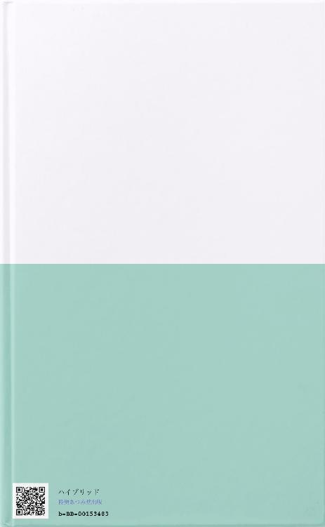

| ハイブリッドセラフィス (陸奥あつみ堂) | |
| 双葉悠護 | |
| 陸奥あつみ堂出版 (2018) | |
かつて一人の天才女性科学者によって人類には「不死」がもたらされた。時は経ち、主人公の元を訪れた依頼主と、それを巡る数奇な運命とは？時にゆるく、時に鮮烈に活躍する彼女達の勇姿から目が離せない。今、物語の扉が開かれる。
この本はBCCKSで発行された
『ハイブリッドセラフィス』
著 者：双葉 悠護
発 行：陸奥あつみ堂出版
のEPUB版です。
EPUB版は、BCCKSの紙面とレイアウトや表示が異なります。
BCCKS版の閲覧は、以下のURLをご覧ください。
http://bccks.jp/bcck/153483/info
Powered byBCCKS
この作品はフィクションです。実在の人物・団体・事件等には一切関係ありません
───────────────────────
< チャプター１ >
< チャプター２ >
< チャプター３ >
< チャプター４ >
< チャプター５ >
< チャプター６ >
< チャプター７ >
< チャプター８ >
< チャプター９ >
< チャプター１０ >
< チャプター１１ >
< チャプター１２ >
< チャプター１３ >
< チャプター１４ >
< チャプター１５ >
< チャプター１６ >
< チャプター１７ >
< チャプター１８ >
< チャプター１９ >
< チャプター２０ >
< チャプター２１ >
< チャプター２２ >
< チャプター２３ >
< チャプター２４ >
< チャプター２５ >
< チャプター２６ >
< チャプター２７ >
< チャプター２８ >
< チャプター２９ >
< チャプター３０ >
白く広大なホールに一発の銃声が響いた。
女が鷲掴みにした子供の頭に銃弾を撃ち放ったのだ。
画面越しに突然に繰り広げられたスプラッタによって、店内の至る所から、悲痛な叫び声や嗚咽を漏らす音が聞こえてくる。
カメラへ向かってニコリと微笑むと、女は躊躇する事なく立て続けに二発、三発と、少女のこめかみに銃弾を浴びせた。
飛び散る肉片と鮮血。弾倉内の弾丸を撃ち尽くし、興味を失った玩具から手を離す。
少女は、
ゴトリと画面外に消えた。
「ハロー！みなさん、ごきげんよう。いかがお過ごしですか？」
人懐こい笑顔でヒラヒラと血に塗れた手を振っている。
「いつもの番組をお楽しみの所に恐縮ですけれども、少しだけお邪魔させて頂きますね」
「今日こうして御目見得したのは、私達が長年、取り組んできた実験の成果をお見せする為ですわ」
首元に毛皮のついた高級そうなベージュのコートを身に纏い、長い薄栗色の髪を優雅になびかせて、女は楽しそうに語る。
「それはとてもとても長い道のりでした。試みは困難を極め、薄氷の様な薄い可能性を求めて、たゆまぬ研鑽と努力を続けて参りました」
「星屑ほどの物量。それがどれほど途方もないものだとしても、そこに未来があるとしたら求めずには居られないのが科学者という生き物であり、性なのです。業とも言うのかしら？フフフ」
「どんなに罪深かろうとも、いかなる摂理に逆らおうとも、己の求めた結果を追い求めてしまう。あぁ、なんて利己的な生き物、器」
「さて、そろそろいいかしら？さぁ、ご覧なさい。そして、その目にしかと焼き付けるのです」
女はカメラに目配せをする。視界はゆっくりとズームし、先ほどの少女を写す。
私達はただ、背筋が凍りつくのを感じた。
信じられない。信じられないが、先ほどの頭を半分吹き飛ばされた少女が起き上がるのだ。粉々になったはずの頭蓋は復元し、吹き出した血液の跡だけが服にこびり付いている。
少女は女の横に並ぶと褒美を与えられるように頭をくしゃりと撫でられた。
「そう、これは我々、人類が神からの縛りを解き放った奇跡。今まで、どう足掻いても到達し得なかった神の領域に達した奇跡の瞬間なのです」
「生物という器には『死』という概念が常に付き纏います。これはどんなに地位が高かろうとも、どんなに原始的な構成でも平等に与えられるもの。永遠に逃れる事の出来ない呪縛、神の与えた拘束。足枷。我々は今、そこから解き放たれたのです」
カッ、カッ、とハイヒールを鳴らし、優雅に遠ざかった後、振り向いて両手を広げた。
女と少女の後ろには白い拘束衣に身を包んだ集団が横一列に並んでおり、少女はその端に並んだ。
「どんな自由もどのような栄光も一瞬の瞬きです。いずれ灰と化す代物に何の価値があるのでしょう。私には疑問だわ」
女は集団から離れ、手を上げる。その合図とともに拘束衣の集団は一斉に銃器を取り出し、武装した。
その手を静かに振り下ろすと同時に凄まじいまでの銃撃戦が始まった。その場にいる女以外の全員が死にものぐるいの攻防を繰り広げている。
「狂ってやがる...」
どこかの席でそう呟く声がした。当然だ。オレだってそう思う。だが、その刹那、流れ弾が女の頭を直撃した。よろめき、額を手で覆いながら女は態勢を立て直す。白い煙を吹き出しながらも女の額はみるみる修復されてゆく。
「ごめんなさいね。あまりこういうのは慣れていなくて」
そう呟き、女は再び右腕を掲げた。それを合図に銃撃戦はピタリと止まり、白い拘束衣の集団は傷の修復された者から順に並んでいく。
全員が並び終えると、女はカメラに近付いて人差し指を立てて、くるくると回す。
「これからゲームをしましょう。ええ、とても簡単なゲーム。あなた達は自分達の築いてきた陣地を守って下さい。私達に椅子を取られたら負け。あなた達が守りきれたらあなた達の勝ち。とても簡単なルールでしょう？」
「お相手は私のかわいい子供達。ふふ、そうね。ハイブリッド・セラフィスとでも名付けましょうか。人類の皆さんに裁きを下す私の可愛い子供達。」
女がそう宣言する。
それが人類の黙示録(ネオ・アポカリプス)の始まりだった。
あれから五百年が経った。その間に世界は五回滅び、そして再生した。
「始まりの母」と呼ばれた女性はもう、いない。その子供らによって屠られ、未来永劫、この地上に戻る事はないと約束されたからだ。
人類の黙示録後、彼女達は一年と経たずに地上を制圧し、世界は彼女達の支配下に置かれた。
彼女達に逆らう者は無惨に『処罰』され、また、従う者には『恩恵』が与えられた。そう、「不死」である。しかし、彼女達の『完全なる不死性』とは異なり、ひどく限定的なものではあったが、人々は束の間の安息を味わった。
やがて、何人かの目覚めた子供達の反乱に遭い、「始まりの母」の起こした統一国家は消え去り、残された権力を巡って幾多もの争いが巻き起こる。
その過程で数々の文明、大地の五分の一が消え去り、かって存在した技術の多くが消滅するか、もしくは各国独自の秘密として独占されるようになった。
その間にも不死の恩恵を与える薬剤の研究は進み、数え切れない程の新薬が生まれ、
現在の多種多用なIMT(イモータル・メディカル・タブレット)の数々の始まりは「彼女」がもたらした、とも言える。
そして「ハイブリッド・セラフィス」と呼ばれた彼女の子供達は、ある者は海中奥深くに沈み、又、ある者は宇宙空間を漂流し続け、時代の流れと共に散り散りに霧散し、その消息を知る者は今ではほとんどいない。
いずれにせよ人類には「不完全な不死」とそれをもたらすIMTだけが残されたのである。
蒸気機関車の汽笛の音と共に窓の外から灰色の煙が流れるのが目に写った。
学習院の人類史で習うような講義の内容をうたた寝の最中に反芻してしまったのは、それだけ今回の件に気負いを感じているからだろうか。
長らく列車に揺られ、国境付近の辺鄙な町の無人駅で下車すると今度は馬車に乗り換える。
赤土混じりの荒れた街道はわずかばかりの砂利が敷かれ、時折り、土煙りが舞っている。雨でも降れば途端にぬかるみ、とても歩けたものではないだろう。今日が晴天で本当によかったと胸を撫で下ろした。
馬車から徒歩に代わり、スラムの街なかを歩く。この辺りは中央都市とは様相が違い、我が国においても、未だに手の行き届いておらぬ場所があるのかと驚かされた。
地面に座る子供。腐りかけた木材で建てられた住居。およそ使い途のないスクラップが乱雑に積まれ、経済状況が豊かではない事は明白だった。
周囲の景観に驚かされながら歩く私の前に、影が落ちる。
ふと、前を見やると随分と図体の大きい男三人組が道を塞いでいた。
「よお、おっさん。見ねぇ顔だな。あんた、知らねぇんだろうが、ここ通る時には通行料が必要でよぉ」
「ほぉ、いくらだ？」
男達はニヤニヤと笑っている。
「そうだな、有り金全部とその手に持ってるスーツケース。それで勘弁してやるよ」
「それは随分と高い通行料だな。もう少し安くはならないのか」
「へへっ、無理だな。こんな所までノコノコやってきた勉強代として大人しく払っときな」
「残念ながら、その交渉は受け入れる事は出来ない。金銭が欲しいのなら勤労に励むのが一番だ。悪いが、先を急いでいる。通らせてもらうぞ」
「おおっと。待ちなって、お、やるのかコイ...、ツ」
男が胸元を掴もうとするのを、するりと躱し喉元にナイフを突き付ける。
「もう一度言おう。金銭を得るのなら勤労が一番だ。この様な事をしている暇があるのなら、国の為に働け」
「わ、わかった、わかったからソイツを下ろしてくれ！」
ドスンと腰を落とすゴロツキどもを尻目に私はスーツについた土埃を払った。
「もし働き先に困っているのなら、市の行政担当に行け。たっぷりと仕事を紹介してやる」
ゴロツキ共に釘を刺し、私は先を急ぐ。
「なぁ、アンタ軍の人間だろ？！何処へ行こうってんだ」
「おぉ、そうか。そういえば貴様ら、この辺りの人間だな。早速だが仕事を与えよう、実はこの店舗に行きたいのだが、道案内をしてくれまいか？」
「は？？、アンタ、正気かよ！悪いこたぁ言わねえ！そこだけはやめとけ！何の用があるのか知らねぇが、そこだけはやめとけって！」
「ん？腑に落ちんな。ここに何がある」
「そ、それは...、なぁ？」
男達は揃えて口を淀んでいる。
「お前達がどう思おうが、私はここに所用があるのだ。案内してくれまいか？」
「わ、わかったよ...、ただし近くまでだからな？！それ以上は絶対に関わらないからなっ！」
「それでいい。近所まで案内してくれればいい」
私は男達に連れられ、目的の建物まで案内された。男達はそそくさと退散し、私はその建物を見上げる。
その建物は一見、周囲の建築物と変わり映えが無いように見えた。そこそこに丈夫な造りになっているようではあるが、モルタルで仕上げられた壁はひび割れ、ショーウィンドウのガラスは白く濁り、内側に貼られたポスターらしき紙が乱雑に貼り付けられている。それ以外は特に悪目立ちする事もなく、雨風をどうにか凌げる程度には出来ている様だ。
ただ、いささか店名の描かれた木製の看板とガラス窓に貼り付けられた告知の方法にはもうひと工夫を凝らす余地がある気がする。芸術に対して造詣のない私から見ても、あまりにも、あまりにも不格好な出来栄えだったからだ。
だが、それは個人の感性の問題なので深入りせず。が、賢明な判断なのだろう。私は入り口のガラス製のドアを開け、店内へ入る。
薄暗く、ホコリと塵の混じった匂いの中、何段にも仕切られた棚に小箱が並べられ、雑多というべきしかない店の造りになっている。奥の方にはレジカウンタがあり、そこにも女性店員が一人、座っているようだ。
「あらー！これは、また随分とお行儀のいいお客さんが来ましたわね！用件は何？用件は何？ご用件はなんですのーーっ？！」
先程まで棚の掃除をしていたメイド服姿の女性店員が勢いよく話しかけて来る。ピンクがかった金髪を三つ編みにして、顔の大きさに不釣り合いな眼鏡をかけ、こちらの反応を待っている。
「いらっしゃいませ！いらっしゃいませー！ようこそリッツェリア雑貨用品店へ！さぁさぁ、どうぞお好きなだけご覧になって下さいまし！あー、もう久しぶりのお客様でテンション上がってしまいますわぁー！！」
「すまないが、今日は店主の方は御出でになるだろうか？」
「ほへ？あー、えっと何の用件ですぅ？返事次第で居たり居なかったりしますけどぉ」
「ふむ、それは随分と困った店主だ。先方が納得する条件でなければ出てこないと」
「そうですそうです。それに今日は私たちが店番を任されておりますからね！しっかりと果たさないとー！」
「ふむ、なるほど...」
私はしばし考え込む。なるべくこちら側の情報を明かさずに、先方を納得させる方法は無いだろうか。
困った事にその様な都合のいい手立ては無さそうだ。かと言ってこの場で全てを明かしてしまう訳にもいかず、考えあぐねていると、
「シャル、いいよ。奥に通してあげて」
「あらー！お嬢、いいのですか？」
「あぁ、大丈夫」
店内のレジのさらに奥の方から声がした。少し経つとその暗がりから、幼い子供の容姿をした白衣姿の女性が現れた。
肩にかかる黒髪を鬱陶しそうに掻き上げ、レジ番をしていた女性にクローズの札を出すように指示をしている。
「シャル、案内してあげて」
「はーい、わかりましたー！」
私は「シャル」と呼ばれる三つ編みの女性に奥の応接間に通される。八畳ほどの広さの部屋の中に向かい合わせのソファが二つ、テーブルを挟んで配置されている。隅には様々な道具が物置き小屋の如く積み上がっていた。
待つ間もなく、先程の黒髪の小柄な女性が現れ、私の対面に座った。その後方にレジ番の女性とメイド姿のシャルと呼ばれた女性が立ち、待機している。
「さて、ご用件は何だろう」
落ち着き払った様子で黒髪の店主が問いかける。
「先ず、こちらの素性を信用頂いた事に感謝の言葉と御礼を申し上げます。私は陸軍省所属、准尉の役を務めておりますウェールズ=ラインハルトと申します」
「軍......？」
黒髪の店主の眉がピクリとひそめる。
「なんだ、軍の人間か。ちっ、期待して損した。てっきり製薬会社の営業かと思って期待したのに。で？軍のお偉いさんがこんなちっぽけな店に何の用さ？ここにはなーんにもないよ？」
私が軍部の所属と分かると否や、途端にぞんざいな態度に変わった。
私は傍のスーツケースを取り出し、その鍵を開ける。その中には、厳重に保管された錠剤が一粒入っている。
「なんだい、これは。白い錠剤？」
「ええ。実は先日、軍の関係者が殉死しまして。これはその時の現場に残されていたものです。これの解析をお願いしたい」
「は。そんなの、軍でやればいい話じゃないか」
「ええ、勿論。軍でも解析を試みました。ですが、解析結果はオールエラー。解析不能だったのです」
「はははは！おかしな話だ。軍で解析不能だったシロモノをこんなヘンピな店で解析できるとでも？」
「たしかに。普通ならばそう判断するのでしょう。ただ、少し風の噂に聞きましてね」
「ヴェルハイム医局医院」
その単語に女主人は、反応する。
「そこにコネクションを持つ人物がいると聞きまして、こうして尋ねて参った次第です」
「ウチは関係ないといったら？」
「そうですね、ここから洗いざらいに周辺の薬局全てに尋ねて回る事になりますね。大騒ぎになるでしょうな。その様な大医局との繋がりを持つ者を人々が放って置く訳がない。静かに暮らすには不便となるでしょう」
「貴様......。ちっ、わかった。わかったよ、引き受けた」
「ほう、認めると」
「馬鹿を言うな。別に繋がりがあろうがなかろうが、踏んだくれると思っただけだ。それにそんな噂を流されて安易に街の治安を乱されたくはない」
「感謝します」
「で、成功した時の報酬は？結局それ次第だけど？」
「はい。成功した暁にはクラスCのIMT(イモータル・メディカル・タブレット)の販売権とその流通ルートを。望むのならクラスBも可能との事です」
「それは随分と思い切ったというか、いいのか？それ。破格なんて物じゃないだろう？」
「それだけ切迫した問題だと思って頂ければ結構です」
「ふーむ、分かった。引き受けよう。見返りも申し分ないし」
「ありがとうございます。では、注意点を一つ。その錠剤、一粒のみしか存在しません。解析に使用するのは四分の一までに留めて頂きたい」
「なっ！？それは無茶だろう！」
「ですが、証拠として残しておかなければ」
「だって、もうすでに四分の一、欠けているのだぞ！」
「それは軍部での解析に使用した部分ですので」
「うぬぬ、し、仕方ないのか。わかった、分かったよ。なんとかしてみる」
「よろしくお願い申し上げます。では、定期的に進捗を伺いに参ります。その形でよろしいかな？」
「あぁ、その方が助かる。あまり期待しないで待っててくれ」
「ははは、吉報を期待しておりますよ」
商談は成立し、私は店を後にした。
馬車を乗り換え、列車に乗り込み帰路に着く。列車の窓を開け、心地よい風を浴びる。
ここから三時間ほどかけて軍へと戻るのだが不思議と心が軽やかだ。
軍部へと戻ると、上司のバレット大尉に報告を果たし、帰り仕度の為のシャワーを浴びる。
着替えを済ませ、講堂の廊下を歩いている途中、同僚のファーノズルとすれ違う。
「やぁ、ファーノズル」
「あぁ、ウェールズか」
「君も大変だな。立て込んでいる時期に配置変更になるなんて」
「仕方ないさ、前線に近い配属だったのがオレだったのだから。しっかりと後任を果たすまでさ」
「そうか、あまり無理をして体を壊さないようにしてくれよ」
「忠告感謝するよ、ウェールズ。まぁ、偶然にもこれでお前と同じ階級になれたんだ。頑張って引き離されないようにしないとな」
「ははは、何を言っているんだ。階級なんて気にしてないさ。僕と君は友人だろう？それで充分さ」
「はは、そうだな。君も体を壊さないように気をつけてくれよ、ウェールズ。じゃあな」
「ああ、また」
後ろ手に手を振るファーノズルを見送り、軍部に設置された駅まで急ぐ。
係の者に軍章を見せ、改札を抜けた。ここからは完全な個室になる。奥のエレベーターに乗り、ため息と共にネクタイを緩めた。
軍部の所属の人間は徹底した秘密主義となっており、勤務外のプライバシーを守られている。
エレベーターを降り、ロッカーの設置された小部屋に着くと出入り口に鍵をかける。
顔に注射された薬剤の解除薬を飲み、ハンガーにかけられたグレーのスーツをロッカーから取り出して袖を通す。
ここからさらに奥へと進み、ランダムに選ばれた列車に乗り込む。私の居住地はここからさらに列車で二時間ほどの場所にある。
列車の到着先は軍部の用意したダミーカンパニーの地下に出る。出社する際は特殊な操作を行う事でこの場所に出る事が出来る。
何故ここまで徹底されるのか。それは軍で支給されるIMTにある。軍で使用されるIMTは民間に出回る物に比べ、ランクが１段階高く、これを不正に手に入れようとする輩がいる。もちろん、使用状況は徹底的に管理され、持ち出しは不可能になっているが。
それでも、よからぬ輩に付け入る隙を与えてしまった者が数年に一度ほど現れる。
そのような者の末路は知りようがないが。どちらにせよ軍部によからぬ感情を抱く人間は少なくない。その意味ではこのシステムは気に入っている。
私は自宅の近くまで回送する馬車に乗り込み、座席にゆったりと腰を下ろした。すでに日はどっぷりと暮れている。
停留所から数分ほど歩き、玄関の鍵を開ける。家の中に入るとほのかにいい香りが漂ってきた。
「おかえりなさい、お父さん」
「ただいま、ターニャ」
私は娘の用意してくれた夕飯に口をつけ、団欒を楽しむ。この日々を失う訳にはまだ、いかないのだ。この子の為にも。
彼女が応接間で腕組みをしたまま、固まって何時間経つだろう。あの軍人が来てから数日。あの調子で考え込んでいる。私は棚をハタキで掃除しながら、ちょっかいをかける事にした。
「お嬢ー！どうしたのです？ほらほら、置き物にでもなるつもりなんですかー？」
「んん？うーん、ちょっとなぁ」
「そーんなに悩むなら、引き受けなきゃよかったじゃないですかー」
「いやー、確かにな。まぁ、悩みはそこじゃないんだけど」
「ふむ？ならば、お嬢をお悩ませになる問題の種はいずこに？」
お嬢はしばし考え込んだ後、両膝を叩き
「よし、一度診てみるか！」
と、立ち上がった。そしてすぐ座り込んだ。
「しかしなぁ。それもなぁ」
ブツブツ呟いている。
「？そんなに悩むなら、別に実行してしまえばいいのではないですか」
「あのなぁ、シャル。軍の解析設備でさえ無理だったモノだぞ？ここの設備でイケると思うか？いや、それで解れば儲け物だが」
「はぁ、それなら別にやっちゃえばいいと思いますけど、しかし」
「ふーむ、そうか。まぁダメ元で試してみるのも手か。よし、シャル。準備を」
「アイアイサー！」
シュタと手をかざし、奥の研究室の準備に取り掛かる。
「......」
「............」
「............、............」
「ぬあーーーっ！！」
お嬢が奥の研究室にこもってから数時間後、奇怪な叫びが聞こえた。
「やっぱりダメだったぁ......」
と、ひどく残念そうな表情でお嬢が姿を見せた。
「はぁ、それは残念でございました」
「博士、かなしそう」
「言うな、リコ。余計に悲しくなる」
ひょこっとレジ番をしていたリコが顔を出す。
「しかしシャル。これは、相当に厄介だぞ」
「と申しますと？」
「まず、薬効成分の構成が見えてこない。素材自体の科学構成は解るのだが、これが人体にどう作用するのかが、複雑というか原理的に有り得ない。それといくつかの成分が解析する度に結果が変わる。軍程度の設備じゃどうこう出来る代物じゃない。もちろん、ここでも、な」
「ほぅほぅ、私程度のオツムではさっぱりですが、結論は？」
「ぐっ、ぬぬぬぅ......。あそこに、たよ、る、しか、ない......」
「お嬢、そんなに嫌なんですね」
「当たり前だ！あそこに辿り着くまでにどれだけ苦労するのか！」
「はぁ、なるほど」
私はお嬢がグニョングニョンと身体をよじらせて悶えているのを尻目に、ある事を思い出した。
「そういえば。お嬢、医院との交信するアレありますやん？」
「なんで訛るんや。あれな、あるで？」
「それ使うのエレック(電気)いりますよね？」
「そうやで」
「持ち運ぶのはむっちゃ危険ですよね？」
「そうやで」
「通信に使ってた施設、この前の襲撃でバラバラになりましたよね？」
「あっ......」
前途は多難な予感がした。
ゴトゴトと馬車に揺られて三時間。すでに尻の感覚がなくなってきた。
「お嬢ー！いつになったら着くのですのー！」
「うるさいっ！私に聞くなっ！」
荷台を改造したとしか思えない二十人は優に入る大型の客席の乗り心地は最悪で、対称的に悠々と闊歩する馬達は余所見をしながら、のんびりと進んでいる。
クッション代わりに敷いた上着はほぼ役に立たず、地面からの振動をダイレクトに伝えてくる。
シャルとリコの二人は慣れない痛みにどうにか折り合いをつける為に必死だった。
下を向き、ひたすら押し黙って耐えているリコと、反対に延々と喋り続ける事で痛みを紛らわそうとするシャル。こんな所でも性格の違いが出るのは私にとって、いい退屈凌ぎになった。
しかし、そろそろ休憩のひとつでも入らないと私の尻が持たない。
「もー！なんで馬車なんて使おうとしたのですかー！お嬢ー！」
何故って、もちろん運賃の節約の為に決まってる。三人分の旅費というのはバカにならないのだ。
喚き続けるシャルに馬車の運転手が嫌気が差したのか、ここで少しばかりの小休止が伝えられた。
荷台から降りて陽の光を浴びる。凝り固まった身体を伸ばし、束の間の英気を養おう。乗客の中には、旅に慣れていない者も何人か居た。
特に、今しがた老夫婦に背中をさすられているあの少女なんて酷いものだ。
一時間ほど前に停留地から乗り込んできた直後から、青ざめた顔でひたすらに馬車の揺れに耐えていた。
無事に旅路を行く事が出来ればいいのだけど。
そんな想いも虚しく、彼女はそれから三十分後、どうしても耐えられずに口を押さえ途中の停留地で降りていった。
馬車からのぞいていると、膝まづいて嘔吐しているようだった。
「あらあら、可哀想にねぇ。きっと慣れない旅で無理をしてしまったのだわ」
老夫婦の婦人が心配そうに彼女を案じている。
「そうですね、慣れない旅は神経を使います。きっと彼女は馬車の揺れに当たってしまったのでしょう」
「ええ、これからの彼女の旅路に幸運がありますように」
婦人はそう言うと、祈りを捧げた。
「あなた達は大丈夫？」
「はい、これくらいの揺れならなんとか」
「はいはーい！私はもう限界ですー！お尻がっ！お尻がっ！お尻が三つに割れてしまいそうでーす！」
「あらぁ。まぁ、それは大変」
「そうです！たいへーんなのです！リコちゃーん！貴方のおひざにダーィブッ！！」
「それは、拒否します」
リコに跳ね除けられ、シャルは床を転がる。
車内に束の間の笑いが巻き起こる。
「貴方達はどこまで？」
「そうですね、もうしばらくは乗っていると思います」
「そう、大変ね。この馬車は私が言うのも何だけど、のんびり屋さんだわ」
「確かに。あなた方はどちらまで？」
「私達は郊外の住宅地まで」
「なんと。ではまだ先になりますね」
「そうね。ゆったり揺られて気長に待つわ」
「そうですね。それが一番いいのでしょう」
「ええ、早く着いたとしても、いい事なんて一つも無いわ。結局、私達が行ってみた所で何も出来ないのだし」
「それは？どういった意味でしょう」
「私達、実は郊外の方にいくつかの土地を所有しているの。それを軍の方々にお貸ししているのだけど、お父さんが最近になってゴネちゃって」
と、婦人は旦那の方を見る。老紳士はムスッとした表情で不機嫌そうに腕組みをしている。
「私はあんな使い方をするとは聞いておらん！大事な我が子のような土地を粗末に扱う輩に、これ以上、貸せん！」
「ほら、ずっとこんな調子で。ごめんなさいね」
婦人は申し訳なさそうに謝る。
「いえいえ、お構いなく。私の方こそ不躾な質問をしてしまい申し訳ありません」
「お気になさらないで。実を言うと私も今の使い方は好きではないわ」
「はぁ、なるほど」
「出来る事なら引き上げて頂きたいのだけど、そうはいかないのでしょうね。多国の脅威から国を守る大切なお仕事なんですもの」
「大切も何もあるかっ！あれは！」
老紳士が声を荒げる。
と、同時に荷台の外から運転手の慌てる声が聞こえる。
「あら、どうしたのでしょう。ほら、お父さんが大声出すから、馬達も驚いてしまったのだわ」
「ば、ばっかもん......。そんな事あるか」
「......？？」
ガクンと後方の車輪が沈み、馬車が速度を上げる。
「お、おい！どうしちまったんだよ！お前達！」
「止まれ！止まれ！止まれって！おい、止まってくれー！」
必死の制止も空しく、馬達はグングンと加速してゆく。荷台は激しく揺れ、乗客は支柱にしがみついた。
「おおおおおお、お嬢？！」
「騒ぐなっ！つかまってろ！」
暴走を始めた馬車は公道を突っ切り
「ば、ばっかやろう......！そ、そっちは崖！」
「な、ちょっ、ちょっ、ちょっとーーー！」
そのまま、陵丘を登るように突っ走り、飛び込んでいった。投げ出されない様にしがみついた車内から見えた崖は、底が･･････、見えなかった。
「どう？ターニャ」
「ええ、うまくいったわ。崖にまっさかさま」
「ヒュー！やるー！アンタってほんと非道いわね！」
「人のこと、言えたものじゃないでしょ、アンタも」
木陰から人影が二つ、ゆっくりと現れた。一人は先ほどの少女、もう一人は黒尽くめのボディスーツで鼻の上まで覆い隠している。
「この高さからじゃ、民間人は無理でしょ」
「そうね」
物想いに耽る様に崖の上から見届けた後、
「メグ、やはりもう一押ししてくるわ」
「はー、本気？ここ降りるのすげーダルいし」
「なら、アンタはここで待ってなよ」
「やだよ、ほんと仕事熱心よね。真面目」
「別に。詰めが甘いのが許せないだけよ」
そう言うや否や、ターニャと呼ばれた少女は軽々と崖を駆け下りていった。
「人の話ほんとに聞かない奴だなっ！もう！」
続いて黒尽くめの少女も駆け下りていった。
崖の下にはかろうじて原形を留めている荷車が転がっていた。中を覗くと血に塗れ、人の形をしている物の方が少ない。
「で、どうすんの？」
黒尽くめの少女に促され、少女は一考すると
「これ使うわ」
懐からダイナマイトの束を取り出す。
「うっわ、派手！目立つって！それ！」
「見せしめなんだからこれぐらいで十分じゃない？」
「あー、ま、そっか。なら、いっちゃえいっちゃえ」
「離れてないと、別にいいか」
「よくねーし？」
「じゃあ、着火」
「人の話聞けよ！テメー！」
少女は、導火線に火をつけるとそのまま荷車の中に投げ入れた。凄まじい轟音と共に爆発が巻き起こった。
「ゲホッ、ゲホッ、何なんだよ、テメー」
「ま、いいじゃない。無事だし」
「そういう問題じゃねーんだよ！これ、どーすんだよ！着替えとか！」
「あー、そういう問題？考えてなかった」
「イノシシかよっ！テメーは！」
「残念、あっちの方が賢いのじゃない？」
「ちっ、なんで今日はコイツと一緒の担当なんだよ。厄日じゃん！」
「はいはい、任務も終わったし、さっさと帰る」
「だから人の話！」
「聞いてる聞いてる」
「聞いててこれかよ！バーカ！！」
粉々になった馬車の黒煙と共に黒尽くめの少女の叫びが響き渡り、反響するのだった。
馬車が爆破されるおよそ十分ほど前。
「ぷはぁ！」
水しぶきを上げて顔を出す。穏やかな川の流れにかなり下流まで流された事を確信した。
私が顔を上げるのに続いてシャルとリコの二人も水面に姿を見せた。
「みんな、無事？」
「はい、博士」
「私も平気でーす。ひゃー、びっくりした」
皆の無事を確認して私は胸を撫で下ろす。
「リコがちからを使ってくれなかったら、危なかったわね」
「すみません、二人を助けるのに必死で他の人には手が回らなかったです」
「気の毒だけど、仕方がないわ。あの人達には悪いけど、運がないと諦めてもらうしかない」
「しかーし、なぜお馬さん達は急に元気になったのでしょうね」
「そこまでは分からないけど、襲撃されたのは間違いない」
「はぁ、物好きな人達ですねぇ」
「敵？」
リコが身構える。
「まだ分からないわ。追っ手がくるとも、......えっ！」
凄まじい轟音と共に馬車の方角から黒煙が立ち上った。
「とりあえず川から出た方がよさそうね！」
「同意です！お嬢は私の後ろへ！リコちゃん！」
「了解です」
川にリコを残して私達は近くの草むらに身を隠した。
しかし、一向に敵の現れる気配はない。リコに川から上がるように命じ、これからの計画を立て直す事にした。
「このまま進行を進めるのは危険と判断するわ。ひとまず近くの町に身を潜めましょう」
「わかりました」
「はい、同意です。博士」
「今日は宿をとって、そこに泊まりましょう。なにより、こんなズブ濡れのまま行動するなんてあり得ない！」
堂々と宣言すると二人から拍手が送られた。
「では、宿で敵が現れたら？」
「倒す」
「宿屋は？」
「よくて半壊、下手したら全壊ね。異論は？」
「ありません」
「右に同じでーす！襲ってくる人が悪い！」
「よし！それでは行動開始！」
「はーい！」
おそらく宿屋にとってこの上なく迷惑な客、三名の宿探しが始まった。
翌日。
「ふーん、なるほど。そういう事ね」
朝刊に目を通しながら、納得する。
「何がですか？お嬢」
朝からシャワーを浴びていたシャルが尋ねてくる。朝刊の一面の記事を叩きながら
「これよ、これ。狙いは私達じゃなかったって訳」
そこに掲載されている記事には昨日の老夫婦が載っていた。残念ながらあの二人は亡くなった。そして残された遺産、それの処遇が書かれていた。
「ま、勘繰る訳じゃないけど、どうも軍の人間にとっては邪魔だったようね、あの二人」
「いい人達だったのですのに」
「それはそれ。これはこれ、って事じゃない？」
「はぁー、よく分からない話ですねぇ」
「あんまり深入りしても気分のいい話じゃないし、これはここまででいいんじゃない？それより、ここ。エレックあるわね」
「そういえばそうですねぇ」
「ふむ、規模としては申し分ないか。ふむ」
「あぁ、お嬢！悪い顔！悪い顔になってますよ！お嬢！」
「ふっふっふっ。そう？」
「リコちゃーん！お嬢が悪い子になってますよー！なんとかしてー！」
とにかく、エレックの確保先は見つかったようだ。そういう意味では収穫のある旅だった。
「よし！帰りは列車だー！」
「「！！！！！！」」
二人の歓喜する表情がキラキラと輝いていた。
「ウェールズ君。」
「これは、バレット大尉」
不意に呼び止められ、後ろを振り返ると、そこにバレット大尉が悠然と立っておられた。
深々と頭を下げ、敬意を示す。
「いいよ。頭を上げなさい」
「はっ」
「どうかね例の件は」
「はい、数日のうちに経過を確認予定であります」
「そうか。事を急いても仕様がない。いい結果が出る事を期待しているよ」
「はっ」
「さて、これとは別件なのだが」
バレット大尉が話を進めようとした矢先、連絡兵が息を切らして走ってきた。
「た、大変ですっ！ライマー中尉がっ！」
「！！」
「後任にはファーノズル准将が当たるとの事で、特例として１階級昇進の措置を与え、前線の指揮を任せられるとの本部からの通達であります！」
「そうか、ふむ、これは、なっ！ウェールズ君！どこへ！」
私は居ても経っても居られず走り出した。偶然？それにしては出来過ぎている！がむしゃらに駆け回り、後ろ姿を確認すると
「ファーノズル！！」
気怠そうに振り向く姿をガッシリと掴み、詰め寄る。
「やぁ、ウェールズ君。いや、まったくあの人がおっ死んじまうなんてなぁ」
「ファーノズル･･････」
「ま、オレとしてはいちいち小五月蝿い小言を言ってくる野郎がいなくなって清々しているが」
「ファーノズル、･･････、君は」
「あの能無しが消えて、空いてしまった分の仕事はオレが頑張らないとなぁ。いやー大変だ」
「君は...！まさか！いや！」
「あぁ？君だってそう思うだろ？世の中、優秀な奴だけが生き残るんだって」
「君は、君は......！なんということをっ！」
「ぐ、ぐえっ！は、離せよっ、離したまえ！ウェールズ君！いったいどういうつもりなんだっ！」
「君は...！なにをしているのかわかっているのかっ？」
「は？僕がやったという証拠はあるのか？つまらない言いがかりはよしてくれたまえ。それに今はもう、君よりも階級は上なんだぞ。敬語を使いたまえよ、ウェールズ君」
「ファーノズル......！」
「ふ、ふん！先を急いでいるんだっ。これで失礼させてもらうよっ！」
私は膝から崩れ落ち、靴音を響かせて去って行くファーノズルの後ろ姿を、ずっと眺めていた。
重なり合えば、花開く。
「やぁ、ミッシェル」
「あら、アリスじゃない。懐かしい顔」
積み上げられた本の山の中にロッキンチェアーがぽつんと置かれて、
「早速で悪いけど、調べ物をして欲しいの」
「相変わらずな人」
ふわりとした表情。
「これ、なんだけど」
「あら、なんだか見憶えがあるわ。どこだったかしら」
軋む木の音。
「ねぇ、未だにずっとあなたが手書きで管理してるの？ここ」
「ええ。だって、それ以外にないから」
擦れ合う紙の本のさりさりとした囁き。
「別にコンピューターとかでデータ管理するとか、さぁ」
「ふふ、そんなの意味ないじゃない。全て消えてしまうわ」
ここは夢うつつの世界。
「大変じゃないの？」
「そうね、貴方が戻ってきてくれるのなら、少しは楽になるかしら」
パタリ、と。
「それは無理だわ」
「ええ、そうでしょうね」
静かに足音が響く。
「どれくらいかかりそう？」
「系統から辿って行けるなら、そこまでは」
パラリ、パラリと。
「そう。また来るわ」
「ええ。その時は手紙でも出しましょう」
さらり。と、衣擦れの音が心地よく。
「それじゃあ、ね」
「あ、せっかくだから紅茶でも一杯いかが？質の高い茶葉が手に入ったの」
此処は夢うつつの世界。
「そう、ね。せっかくだから貰おうかしら」
それは儚く過ぎ去ったはずの虚と実の世界。
「ファーノズル？」
ウェールズ准将との二度目の会合の際、差し出された写真に写った男を指差し、彼はこう言った。
「ええ、この男の調査をお願い出来ぬだろうか」
私とシャルは顔を見合わせる。
「それは、こちらは構わないけど。シャル、どう？」
「はぁ、問題ないと思います」
真剣な眼差しでこちらを見据える目の前の男性に、この質問を投げ掛けるべきか戸惑った。
「ただ、いいのです？同胞の詮索は御法度なのでは？」
「ええ、ですのでこちらは軍を通してではなく、私個人としての依頼になります」
「納得しかねますね。何故、そこまで。正式な手順が必要な案件と推測しますが」
「手遅れになる前に。叶うならば、私が彼を引き留めたいと願っているのです」
「それはただ自己満足では？」
「そうかもしれない。だが、彼とは士官学校時代からの同僚なのです。彼が何を考え、何をしようとしているのか。もし間違いを犯そうとするのならば正してやりたい。そう思うのです」
「......、酷な事を言いますが。事態に気付いた時にはすでに手遅れ。そのような事も多々あります。そうなった時、あなたはどうするのです」
「私は、私は......。それでも彼を止めなければならないのです」
重い沈黙が、押し潰すような泥の様な空気が部屋全体に満ちている。秒針が刻々と時を刻み、進んでゆく。
そして、私は大きく息を吐いた。
「分かりました。ただ、責任は取り兼ねますよ。そして、結末がどうあれ、あなたには覚悟をして頂きたい」
「元より覚悟は出来ております」
「では、こちらも順次報告をする形で。書面は残さない方がいいですね」
「ええ、その方が助かります」
「分かりました。それでは、ひとつだけ確認を」
「はい」
「私はこの時点では何も聞いていない、何も知らない。お受けしたのは、薬の調査のみ。これで宜しいですね？」
「はい、それで結構です」
「分かりました。ではまた次回。その時にはもう少し期待に応えられる報告が出来ると思います」
「宜しくお願いします。それでは、これで」
「ええ、それでは」
男が立ち去るのを見届け、私は革製のソファに大きく仰け反る。
「お嬢、いいのですか？」
「しょうがないだろう。請けてしまったのだから」
「お嬢らしいと言えば、らしいですけどね。困った人を放っておけない所が」
「あのなぁ、人を偽善者みたいに言うな」
「それを言うなら善人ではー？」
「どっちでも同じだよ、私にとっては。他人に不用意に立ち入るのだから」
「ほほぅ、それはまた難しい事をおっしゃいます！」
「何で。結果としてもたらす物は一緒じゃないか。簡単な話だよ」
「それでは今回の件は。あの人に何をもたらすとお思いに？」
「......ふん、まだ何も分からないさ」
「お嬢、やっぱりお優しいですのね」
「バ、バカ......！ほらっ、シャル！さっさと準備しなよ！」
「はい、わかりました」
下ろしたてのスリッパを小気味よく鳴らしてシャルが部屋を出て行った。
私は無人になった部屋で一人、大きく天を仰ぐ。
「博士、たいへん」
ふと、声のする方を見ると、リコが開いたドアの隙間からひょっこり顔を覗かせていた。
「なんだ？どうしたんだ」
「これ。これ、とれてきちゃった」
と、手に剥がれて落ちてしまったポップを持っている。
ソファに踏ん反り返していた上体を起こし、
「なんだ、せっかく作ったのに取れてしまったのか。そうだな。しばらくする事もないし、新たに作り直すのも手か」
「せっかくいい出来だったのに、残念」
「また新たに書き直せばいいよ。さぁ、リコ。そうと決まれば紙を持ってきておくれ」
「！。わかった」
いそいそとはしゃぎながら、必要な物品を取りに行くリコ。
私も机の中から、ハサミとカラーのペンセットを用意する。応接間のソファとテーブルは邪魔になるからスミに寄せる。
型紙の寸法を測り、二人でポップ作りに取り掛かると
「おや？ポップ作りですか。いいですねぇ。出来れば私も参加したい所です」
「シャル。帰って来る頃には完成していると思うよ。期待してて」
「ほうほう、それは楽しみです。前回のモノも素晴らしい出来栄えでした。さて、そろそろ出ないと外に出るのが億劫になってしまいそうですな。それでは、行って参りますー！」
「あぁ、頼んだよ」
「おまかせをー！」
意気揚々と出掛けるシャルを見送って、私達は再びポップ作りに取り掛かる。さて、今回はどのような趣向を凝らしてやろうか。完成が楽しみである。
四日後、シャルの集めてくれた資料に目を通す。
彼女の居ない間に作り上げた渾身のポップもシャルは一目見るなり、大変に喜んでくれた。出来栄えに一抹の不安もあったが、これでひと安心である。
「ふむ、ファーノズル=フレッツェ。階級は少尉。昇進は最近の話か。軍部での担当は西部国境線、前線基地内における警護とその指揮か。ふぅん、これといって取り立てる印象も無い、というのが感想だな」
「そうですねぇ、どこにでもいる普通の人ですわ」
「部下は約百名ほど。数はいるが地方だからなぁ。別段、何かやろうという雰囲気でもないし」
「他にも非正規でひと部隊抱えているっぽいですねぇ。そちらはあまり情報が出てきません」
「ふぅん、シャル。どう？」
「躍進の原動力はそこかと。そちらだけやけにガード固いですねぇ」
「もう少し探ってみる価値あり。か」
「はいな。探ってみる価値ありですわ」
地図を広げ、じっと眺める。
「ファーノズルの普段の行動は？」
「彼は前線と本部の移動を繰り返してますね。兼任のフラルド中尉との折り合いが悪く度々衝突を繰り返しているようです」
「内部での権力争いか。よくある話だ」
「あ、それと」
「それと？」
「二国以外に前線を攻撃する第三勢力の存在が。まぁ、要するにゲリラですね」
「ゲリラぁ？」
「その方達がいるお陰で現場はそこそこ混乱しているみたいですねぇ」
「その勢力の詳細は分かる？」
「いえ、大方、現地の人達が反発しているだけだと思いますけど」
「便乗してる可能性もあるな。うーん、少しそのゲリラ達には大人しくしていてもらいたいな」
「では、お嬢？」
「そうだな、とりあえず准将が来るまでの五日間」
「その間に遭遇、殲滅、もしくはそれに近い形になれば、日数が浅くても戻って来てくれ。一人でいける？」
「囲まれたら厳しいかもですねぇ。リコちゃんがいれば大丈夫ですわ」
「分かった。二人で行ってきてくれ」
「はい、お嬢」
「とはいえ、意外とひまですわねぇ」
お嬢の令で現地に飛んでから早、三日。
もう少し戦火に溢れているかと想像していた前線は牧歌的でもある。
リコちゃんも隣であくびしていたりする。
「なーんにも報告もないというのも、どうかと思いますけど」
「平和なのは、いい事」
「ま、そーですわねー。このままお昼寝しちゃいましょうか」
「ポカポカ」
「ひなたぼっこですわー」
ゴロンと転がって太陽の光を浴びる。ぬくぬくとした温かさがぼんやりと眠気を誘う。
「このまま一晩待って何もなかったら帰りましょうかねぇ、リコちゃん」
「そうしよう。博士もきっと待ってる」
「そうですわねぇー。ずっと一人でお留守番ですものねぇ」
さてさて、そうは上手くいかないというか、ようやく動いたかと、目星をつけていた建物で小競り合いが始まったみたいで。
「さて、リコちゃん。出番ですよー」
「えー、見ないフリしよう」
「そーはいきません。ま、少し小突いてみましょ」
戦闘音の消えた建物にそうっと忍び込む。どうやら立っているのはゲリラ側のよう。二人、...三人か。リコちゃんと目配せをする。
ストンと目の前に降り立ち、意識を遮断する。あっさり三人まとめて縛り付けると、覆面を剥がす。
「こんばんはー。あら、案外お若くて」
「モゴッ、ムグッ、ムグッ」
猿ぐつわをかましているので、上手く喋れないようで恐縮ですが、少しテストをさせて頂きます。
「あのー、貴方達は何処からいらっしゃったのですか？」
「モゴーッ！モゴーッ！」
「このまま全部話してくれたら楽なのですけどねぇ。そうはいかないでしょう」
「猿ぐつわ、とってみる？」
「うーん、あまり騒がれると困りますけど」
一人だけ、試しに取ってみる。
「てめぇら！てめぇらのせいでオレ達の家族が！」
「はて？誰と勘違いしています？私達は通りすがりの旅人。ここには今日初めて訪れたばかりですわ？」
「すっとぼけてんじゃねぇ！クソ女どもが！てめぇらのやってる事は分かってんぞ！くそ！くそ！くそったれが！」
「えー...。ヒドイ言いがかりです。というか私達の他にも女の子が？」
「はぁ？！本気で言ってんのかよ！いや、待て。アンタら、本気で違うのか？」
「なーんか興味深いお話ですねぇ。もう少し詳しく説明して頂きたいものですわぁ」
さて、ゲリラさん達と少しお話しをして仲良くなれたような気がします。
「リコちゃん、帰ってお嬢に報告よー！」
「うん、でもいいの？開放しちゃって」
「ま、変装してるから大丈夫でしょう！彼らとは協力関係にあった方が得だと判断しただけですよ」
「ふーん。そうなのか」
「あの人達もこの国の人達ですからねぇ、そう無下にするのもどうかと思いますよー」
「ふーん」
「それに、なによりここはお店からの距離が遠過ぎます！普段、生活していて出会う事は皆無でしょう。さー、帰りましょー！」
「私共からの報告は現時点では以上です。進展がありましたら、また報告します」
三度目となる応接間での会合。
その席で私はただただ、驚嘆した。
「いや、こんな短期間でそこまで調べ上げるとは。驚きを隠せないです。素晴らしい」
「ありがとうございます。ご質問等はございますか？」
「いえ、現時点では何も。新しい情報がありましたら教えて頂きたい」
「分かりました。それでは、こちらからよろしいですか？」
「あ、はい。......、えーと、そういえば、まだお名前を伺っておりませんでしたな」
彼女達はキョトンとしている。
「あぁ、そういえばそうですね。では、私は東雲。東の雲と書いて(しののめ)と読みます」
「ほう！「漢字」ですか、珍しい。もしやジャポネと何かしらの縁がおありでしょうか？」
「いえ、そういう訳では。そうですね、言うなれば「憧れ」でしょうか」
「なるほど、東雲...」
「お嬢」
「博士」
「コホン、では東雲博士。どうぞ今後とも宜しくお願いします」
「ええ、こちらこそ。で、こちらの三つ編みがシャル。私の助手、兼アシスタントです」
「どうもシャルと申します。ウェールズ准将、今後ともよろしくお願いしますわ」
「ええ、シャルさん。こちらこそ宜しくお願いします」
「そしてその隣のポニーテールにしている方がリコ。こちらも私の助手、兼アシスタントです」
「リコです。よろしくお願いします」
「はい、リコさん。こちらこそ宜しくお願いします」
「自己紹介はこれで終わりで。それでは本題に入らせて頂きます」
「ええ、どうぞ。私に答えられる範囲なら何でも答えさせて頂きます」
「では。ファーノズルの部下に女性隊員というのは、どの位の割合でいるのでしょう」
「そうですね、我が国での女性隊員の割合はそう高い方ではない。しかし、一定数いるのは確かです。ファーノズルの部隊にもある程度は配属されていると思います」
「なるほど。それでは次の質問ですが、前線における数字を貴方が拝覧される事は可能でしょうか？」
「ううむ、公式の報告の数字ならばある程度なら可能だとは思いますが、何か関係が？」
「そうですね。もし貴方が拝覧されて違和感を覚える箇所がありましたら教えて頂きたい」
「分かりました」
「そしてフラルド中尉とファーノズルのご関係について、気になる点があれば教えて頂きたい」
「ふむ、フラルド中尉。あの方は最近、本部にご在籍になる方が多いですな。特に険悪と聴いている訳ではないので、それとなく探りを入れてみる事にしましょう」
「ええ、よろしくお願いします。そうですね、今の所は以上でしょうか。貴方の方からは、何か御座いますか？」
「そうですな......」
実は、わたしは一つだけ彼女達にどうしても問い掛けたいものがあるのだが、それについて考えるのはやめる事にした......。
「いえ、特には」
「分かりました。錠剤に関しては鑑識結果が出るまでもうしばらくお待たせすることになると思います」
「分かりました。それでは今回はこれで」
「はい。そうだ、この書類は全て破棄します。シャル」
「はい」
そう言うとシャルさんが書類をテーブルの上で全て火をつけ、焼却処分した。
「こちらで処理するよりこの方が安心かと」
「かたじけない。ではまた次回」
「はい、それでは」
私は一礼すると、店を後にした。
ファーノズル。彼が何を目論んでいるのか。
今はまだ見えてこない。見えてこないが何かの動き、気配とも言おうか。その様なモノを今回の会合で感じたのは確かだ。今は、ただ彼女達を信じて待つ事にしよう。
「さて、シャル。地図を」
応接間。ウェールズ准将が帰路についた後、お嬢が地図を広げ、俯瞰する。
「ゲリラの件では、襲撃地点は不規則だと言ったな」
「はい、敵味方見境いないそうですわ」
「ふむ、ウェールズの情報では、ある程度こちらの国が被害を受けた箇所が多いと聞く。巧妙に隠しながら何かを狙っていると考えた方がいいな。ふむ。待てよ、そうか。それなら」
「シャル、リコ。もう一度、現地へ行ってくれるか？」
「はい、分かりました」
廃屋の壁を叩き付ける音が響く。
「ちょっと二人ともやめなよー、」
「コトネは黙ってろよ」
「アンタ、何のつもり？」
「は？べつに。そんなアンタみたいにクソがつくほど真面目じゃねーって言うだけの話」
「そんなつもりじゃないわよ」
「へっ、犬みたいにアイツに尻尾振っちゃってさ、ついでに腰もヘコヘコ振ってんじゃないの、この女」
激昂する手に力が入り、胸ぐらを掴んだまま全力で壁に打ち付ける。
「メグ、アンタ殺すわよ？」
「あ？殺せるもんなら殺してみろよ？百回死んだって死なねーよ？」
睨み合ったまま微動だにしない。コトネはこの状況にどうしていいか分からず、その場でうろたえるばかりである。
「ちっ」
胸ぐらを掴んだ手を憎々しげに放す。こんな事をしていても不毛に時間が過ぎるだけだ。
「けっ、いい子ぶっちゃってさ。せいぜい真面目に働いて弟返してもらって、いちゃいちゃしてろよ」
「ーーーーーーーっ！！！！！！」
「さて、お嬢の読み通りならそろそろ姿を見せてくれる頃合いですねぇ」
とある施設を監視するようにじっと身を潜める。二人がその場所で待機してから三日になる。
「この装備、ちょっと動きにくい」
「まぁ、男性用の装備ですからねぇ。欺く為に必要なので我慢して下さいね」
「でもいざって時に捕まったら意味ない」
「はっはっはっ、その時は何とかするだけです、おっと、来ましたよリコちゃん。さぁ、お仕事の時間です」
ーーーーーーーーーーーーーー
「ごめん、今夜は頭冷えそうにないや。二人だけでなんとかして」
「う、うん。わかったよ。やってみる」
なんとか収まった場で、コトネはターニャとメグをどうにか宥めている。
「ほ、ほらメグ。行こっ？あ、あー、もう余計な事言っちゃダメだって」
「......。ちっ」
「コトネ、ごめん」
そう言い残してターニャは立ち去った。ゆっくりと立ち上がってメグは乱れた髪をまとめ直している。
「ほ、ほらっ行こう？メグ。任務は任務だからちゃんとやらなきゃ」
「分かってるよ。悪かったな、コトネ」
「ううん、いいよ。二人の言い分もなんとなく分かるし」
「......。そうか。あぁ、行こうぜ」
二人は目標に向かって走り出す。草むらを抜け、整備の行き届かない砂利道を駆ける。
「メグはターニャの事、いつも気にかけてるもんね」
「別に、そういう訳じゃねぇよ、ただアイツの悲劇のヒロインぶった態度が気に入らないだけだし」
「その割には、ねぇ」
クスクスとコトネは笑う。
「な、何笑ってんだよ！コトネ！」
「ううん、別に。なにもないよ」
「ちっ」
照れ隠しをする様にメグはソッポを向く。
「それにテメーだけが悲劇のヒロインじゃねぇよ、みんなそーなんだよ......」
「えっ、何か言った？メグ」
「っ、何でもねーよ！」
目標の建物に侵入すると、あっさりと任務は終わった。数名の護衛兵など居ても居なくても同じだ。
「へっ、別にこんな程度あのヤローがいなくても同じだよ」
「ふふっ。さぁ、この遺体を片付けてさっさと引き上げよう？」
「あぁ、そうしようぜ」
カラカラと転がる破片を足で転がす。
「なぁ、コトネ。あ、あれ？お前、口の位置そんなだっけ......」
振り向いた先、そこにいたコトネに話し掛けようとした矢先、異変に気付く。顔のパーツが上下逆さまになったコトネがパクパクと魚みたいに口を動かす。自らの手で頭の位置を戻し、何かを叫ぼうとした、
その横を黒い影がすり抜けてくる。
(敵襲！？)
目の前に現れた影に構えようとした腕を一瞬で持ってかれた。
「なっ、くっそがああぁぁっ！！」
引き千切られた腕が一瞬で生え変わる。その様子にリコは刹那、戸惑う。が、すぐに切り替え、間を空ける。
(一瞬で再生した！？)
コトネの背後でそれを見たシャルは退却のサインをリコに送る。
「ちっ、なんだ、こいつら！ゲリラか！」
メグが鬼気迫る表情で追ってくる。が、間一髪のところで出口を擦り抜ける、その寸前、
「なに、こいつら。なにやってんの？」
頭上からの声に視線を向けると、吹き抜けた二階に影が立っていた。
(ダイナマイト？！)
シャルが影が手に持つソレを認識すると、同時に凄まじい爆発が起きた。
建物は爆散し粉々に砕け散る。二階建ての建築は跡形もなくなり、瓦礫の山に成り果ててしまった。その残骸の中から
「また、これかよ！とりあえず何かあったらそれに頼るのやめろよテメー！」
「いいじゃない、とりあえずなんとかなったんだから」
「あたたた、もうまた二人ケンカしてー。やめなよー」
と、身に付けた装備が全て吹き飛び、素っ裸のまま三人が瓦礫から出て来た。
「あっぶなぁ、ありがとうリコちゃん。助かりました」
数十メートル先、爆風を逃れた木の樹冠の影に二人の姿があった。
「しかし、何だったんだアイツら」
「ま、粉微塵に吹き飛んだからいいんじゃない？」
「そうだけどよぉ。どーすんだよ、これ。またこんな派手にやって」
「ついでにもう二、三個くらい吹き飛ばしておく？一個なら怪しまれるけど、複数なら分かんないでしょ」
「はっ、ホントひでーな！お前！」
「ふえぇ」
なにやら楽しそうに歓談する三人を観察していてるとリコが何かに気付く。
「シャル、ねぇアレ」
「はい？ん？うぅーん、なるほど。これは意外な出会いというか、何というか」
「シャルちゃあぁん？リコちゃあぁん？また、随分と派手にやったわねぇぇぇ？」
店に戻るとお嬢が新聞を片手に、引きつった笑顔で待っていた。
私達は床に正座したまま、身振り手振り必死に弁明をする。
「あばばばば、でも、ですね！これはですね！お嬢！」
「ほら！これを見なさい。だーれがこんなに派手にやれって言ったの！」
「......。三個っ？！」
新聞にはデカデカとその残骸の様子が載っていた。
「でもですね！私達が居た時には一個で......」
「だまらっしゃい！ここまで派手にやったら両軍ともメンツがある。警備の警戒を強めるでしょうね。とにかく、これでしばらくは静観しておくしか無くなったわ。ま、いいが。とりあえず、その時の様子を詳しく教えてちょうだい」
私は力なくうなだれるリコちゃんをなだめながら、その時の様子を説明した。
「腕が一瞬で再生した？」
お嬢は懐疑そうに説明を聞いた。
「この国の大総統ですら腕が千切れたら再生するのに二分はかかるわよ？」
「でもリコちゃんが引き千切ったら一瞬でヒュっとですね」
「ふぅん、IMTによる再生力にはランクがあって大体、その国でのトップが一番高いのだけど」
「そうですね、こちらも二日間ほど動けなくするつもりでいったのですけど」
「うん、軍のAランククラスならそれくらいが妥当でしょうね。結局、IMTの作用ってコア(核)を作り出しそのコアが潰されない限りは死なないっていうだけだし。コアが一つなのか、複数なのか。ソレがIMTのランク付けに直結する」
「民間なら一つ、普通に生活する分にはそれで充分だもの。軍クラスになると戦闘における生命線になるから複数発生する。幹部クラスになると、そのコアをさらに別の方法で保護するわ。再生力にはコアの数が多いほど速いけど、ちょっとその再生力は異常ね。シャル、あなたはどのくらいで再生するの？」
「いえ、私は腕なんて千切れた事ないので、なんとも」
「じゃあ、リコは？」
「わたしも取れた事ないから、分からない」
「お嬢は？どうですか？」
「私は、。......普通は腕なんて取れないのだから分かんないわよ」
「そうですよねー」
「ま、いいわ。他には何か気付く点はなかった？」
「ダイナマイトぉ！？」
「ええ、持っていたダイナマイトで自分達ごとドカンと。それで平気な顔して」
「ピンピンしていた。なにそれ、いつもダイナマイトでも抱えているのかしら、ソイツ」
「うーん、どうでしょう。でも周りのコはまた、とか言ってたのでその可能性アリですね」
「ダイナマイト、を、持ち歩いているの？！あっははははは！なにそれ！とんだ爆弾娘ね！あっはははは！ファーノズル！慎重で臆病な男と思っていたが、なかなか面白いものを飼っているじゃないか！見直した！」
「あ、それでですね、お嬢。その子が......」
「うぅん？」
「こっのバッカヤロウどもがぁ！！誰があんなに派手にやれって言ったぁ！しかもあの建物が重要だっつったのに吹っ飛ばしやがって！！」
ファーノズルが凄い剣幕で怒鳴り散らしている。部隊は一堂にアジトに集められ、ひたすらファーノズルの鬱憤晴らしに付き合わされた。
当事者三人は、前に晒されてその叱責を一身に受けている。残りの四人は乱雑に置かれたソファに思い思いに腰掛ける。
「なぁ、ターニャよ。お前、どういうつもりか分かってんのか？！」
前髪を乱暴に掴み、ファーノズルは罵る。
「絶対服従だって言ったよなぁ？お前、立場分かってるのか？」
「ご、ごめんなさい」
「お前、誰がお前の弟の治療費を出していると思っているんだ？あぁ？これでオレが払うのを辞めたらどうなると思うんだ？あ？」
「す、すいませんでした」
ファーノズルは憎々しげに手を離すと立ち上がって、うろうろと歩き回る。
「けっ、とにかくお前ら、しばらく大人しくしてろ。こんなに監視の目が強まったら動くに動けない。まったく、どいつもこいつも、くそっ」
「おらっ、今日はもう解散だ！散れ！散れ！お前ら！」
喚き散らすとファーノズルは乱暴にドアを閉め、出て行った。
コトネが心配そうに肩に手をかける。
「だ、大丈夫？ターニャ」
「うん、平気。気にしないで」
私は焦燥しきった身体をフラフラと起こし、アジトを後にする。
警備の人達は私に気がつかない。これはサラの「魔女の残り香」の影響だ。彼女の担当はその香りでの洗脳。私達にはそれぞれ一つ特殊な効果をもたらす香りを渡されている。ファーノズルが持ってきたソレはフェロモンのように、気がつかない内に効果を発揮する。ある程度自分で調整が可能であるが、密閉された空間の中での使用が一番効果が高くなる。
サラの「誘惑」の香りは、吸い込んだ者に暗示と思い込みを植え付けるもの。新しくファーノズルの配下になった人はまずサラの元へ連れて行かれる。そして彼らには「私達の存在」はいないもの、として扱われるのだ。
気楽、ではあるが反面、何をしても無視されるのでなんとなく寂しさを感じる。今日だけは、コレの存在が有り難く思えたが。
街とアジトへの途中にある小屋に寄る。そこに普段着を隠している。流石にこの黒尽くめの格好では街に入れないし、その逆も。
そこから家まではまだ数十分かかる。見つからないようにショートカットを駆使して帰宅する。
父はまだ帰って来ていない。私は部屋着に着替え、夕食の支度に取り掛かる。父の仕事は大手の製造メーカーの勤務で、普段から帰りが遅くなりがちだ。さて、今夜は何のメニューにしようかな。
･･････なんて、無理やりにでも考えていないと、心が押し潰されそうだ。私は、いや私達は捨てられていた。両親を内戦で亡くし、行く宛もなく彷徨っていた所をファーノズルに拾われた。拾われた、は正確じゃないな。アイツは路地でうずくまっていた私達に声を掛けた。間も無く弟の病気が発覚し、それは珍しい難病で長期の治療と多額の費用がかかると告げられた。当然、孤児になってしまった私にそんなお金を払えるはずが無く、ファーノズルの進言に従って、私はファーノズルの元で働く事になった。
アイツが用意したのは、弟の治療費だけで、弟は中央首都の病院に移送され、経過を聞く事しか出来なくなった。最近は少し治療の成果が現れ元気を取り戻しつつあると聞く。私は私で行く宛もなく路地で生活をしていた所を、今の父に拾われた。もうすぐ一年半になるだろうか。
最初は、何かあると勘ぐってばかりいたが、純粋な父の好意なのだと思うようになった。だって、だって。こんな優しい人、他にいない。
私はこの生活を失うのがたまらなく怖い。
弟も失ってしまうのもたまらなく怖い。
私は父に見捨てられるのもたまらなく怖い。
私は、この仕事も失ってしまうのもたまらなく怖い。
でも。私は。私は。
そう考えていると、急に吐き気を催し、戻してしまった。危うく鍋に吐瀉物が混ざってしまう所だったけど、それは間一髪免れる事に成功した。
私がダイナマイトを使う理由。
そう、私は今でも思い出す。一番初めに人を殺めた時の、あの。
内臓と生暖かい肉を潰し続ける、あの感触を。
それから私は人を殺す事が出来なくなった。
けれどダイナマイトなら自分の手を使う事がなく、ファーノズルの依頼を遂行する事が出来た。
私の手はもうこんなにも汚れている。洗っても洗っても消える事は無い。真っ赤な手。
あの人は、父は私がこの様な事をしていると知ったら、どうするのだろうか。当然、見捨てられるのかな。
私はその先がたまらなく怖くなってしまう。
いけない。そんな事を考えいたら、また戻してしまった。いい加減、気持ちを切り替えないと。床を掃除して、夕食を完成させて。
私は父とのんびりとした団欒を過ごすんだ。それだけが今の私の生きる道しるべ、なんだから。
「お疲れ、ウェールズ。また明日」
「ああ、また明日」
私は同僚に別れを告げ、エレベーターを降りる。
調査の進展は未だ進まず、悪戯に日数だけが過ぎてゆく。その事に若干の苛立ちがあるのだろうか、自分でも神経が毛羽立っているのを感じる。
ファーノズルの企みも解らぬままだ。
何か手を打っておける間に、動くべきなのだが、それすらも出来ない。
ふと深く考え過ぎている事に気付き、大きく息を吐く。
私は彼女達を信頼しているのではないのか。今は信じて待つ事だ。
帰路につき、玄関のドアを開ける。常に帰宅時間が遅くなってしまい、待たせている娘に罪悪感を抱く。
養子とはいえ、すでに共に暮らし始めて一年と半年になるだろうか。
雨の日、路地の奥で打ち震えている姿を見た時、私は思わず手を伸ばしてしまった。
怯えたような小さな手は冷たくて、そうか。
もうそんなに経つのか。
年の近い弟がいると聞いた。難病で遠くの親戚に世話になっているとも。あの子は弟の話をする時、とても優しい顔をする。
いつか三人で暮らす事が出来る日が来るだろうか。そう考えると私は自然と笑みがこぼれる。そうなる日が来るのなら、私は受け入れるさ、喜びと共に。
室内に入ると、夕食の香りと共にほんの僅かだけすえた匂いがする。嫌な予感がして台所に駆け付けると、吐瀉物と共にターニャがうずくまっていた。私は思わず駆け寄る。
「ターニャ！ターニャ！どうした！大丈夫か？！」
「あ、お父さん......。おかえりなさい。ごめんなさい、夕食すぐ作るから」
「いいから！お前、熱が」
「ううん、大丈夫、大丈夫だから」
「いいから、横になってなさい。後のことは、やっておくから」
「う、ごめんなさい」
「謝らなくていいから！ほら、立てるか？ああ、洋服もこんなに汚れてしまって」
「ごめんなさい、ごめんなさい」
ターニャを部屋に寝かせて、私は台所の後片付けをする。前にも度々、戻している気配はあったが、その度にあの子は大丈夫だからと言って、気丈に振る舞った。
男親だからこそ、こういう時にどうしていいのか分からなくて、四苦八苦してしまう。今回こそ流石に病院に連れて行くべきなのだろうか。
そう考えながら、有り合わせで夕食を摂っているとターニャが起き上がってきて、
「ターニャ、いいから寝てなさい。後で病院に一緒に行こう」
「ううん、もう平気だから」
「何言っているんだ。まだそんなに青い顔して。いいから寝てなさい」
「大丈夫よ、私もごはん食べるわ」
「でも、ほら、まだフラついているじゃないか。まだ横になっていた方がいいんじゃないか」
「へーき。でも、ちょっと軽いものにしようかな。このサラダもらうね」
と、乱雑にちぎって並べただけのサラダを手に取った。
「大丈夫なのか？具合が悪くなったらすぐに言うんだぞ」
「ふふふ、お父さんは心配性だなぁ。もう平気だよ、ありがとう」
私は。
私は。
私は......。
この子の父親にきちんとなれているのだろうか。資格があるのだろうか。エゴではないだろうか。いつも不安になる。
窓から覗く背の高い小綺麗な造形物。ふかふかのベッド、シミ一つない壁紙。風に揺れる新品のカーテン。
望遠鏡を覗くシャルが
「いやー、都会ってすごいですなー」
と、はしゃぐ。
私達は今、西の中核都市に一室を借り込み、居を構える。
「シャル、そんな覗き込んで大丈夫なのか？」
「問題なしです！特注なので光の反射もなし！射程視界距離三キロの特別品です。お、ターゲット発覚であります」
そう、きっかけは。
「ターニャ=レインズ。この子ですね。いや、見つかってよかった」
シャルの持ってきた写真だった。
「たしかにあの馬車の中で出会ったあの子だな。しかしシャル、本当にこの子があの爆弾娘なのか？」
「ええ、間違いないか、と。他の子はチラッとしか見ていないので、分からないですけど、この子は小一時間くらいずっと眺めていましたからね。顔くらい覚えます」
「ふーん、でもコイツがファーノズルの部隊という確証は何一つないぞ。ここからどうやって証拠を集めるか。そいつが鍵になる。どうするつもりだ？」
「住んでいる場所も割れましたからね。監視していれば、そのうち動くでしょう。その後を追っていけば、ファーノズルさんにぶち当たらないですかね？」
「えー、メンドくさい。却下」
「はー！お嬢！いいアイディアだと思ったのですが！」
「大体、コイツがしっぽ出すまで何日かかる。その間にファーノズルの根城でも強襲した方が余程速い」
「むー、そうですか。アジト、アジト、アジト。あ、お嬢。いいアイディアがあります」
「何だ、却下するつもりだが、一応聞いておいてやる」
そんな訳でこの場所において張り込みをする事になったのだ。決して都会に住んでみたい、とか、ふかふかのベッド、とかそういうつもりは一切ない。
「博士、ここお風呂きれい」
「そうか、よし後で検分しよう」
ま、そういう訳であるが。
「よし、シャル。リコ。集合、ちょっと話がある」
「はいはい、お嬢。何でしょう」
「もう集まっている」
「よし。それではここで生活する際の規約を伝えておくぞ」
「はい、お嬢」
「うん、博士」
「とりあえずその服、禁止」
一瞬、静寂が訪れた。
「フフ、フフフフ。お嬢がそんな事を言い出すであろうと思いまして。私、不肖ながらすでにそのクローゼットの中に。全員分の衣類をご用意させて頂きました」
「却下」
「お嬢ーー！」
シャルが泣き叫ぶ。
「大体、お前の用意するモノなんてな、メイド服メイド服メイド服、フリフリ。その辺が......」
クローゼットを開けて確認する。
「悪くないじゃないか、どうしたシャル。頭でも打ったか」
「ひどい！これでも結構悩みました！」
「わ、かわいい」
リコも覗き込み、声を上げる。
「よし、これなら話は早い。早速着替えるぞ。ん？コレは全てサイズが」
「はい、これは私達の分。お嬢の分はこちらになります」
「............」
「博士、似合う」
「おほー！ほーっ！おほーっ！！お嬢！お嬢！お嬢！あーーっ！！ヤバい！ヤバ過ぎますぞ！あー！似合い過ぎて私の語彙力がーーーっ！！」
このバカの用意した服は。
ま、いい。後でたっぷりと説教してやる。
「ち、まぁいい。後な、そのお嬢とか博士とか呼ぶのも禁止な。街中でそんな呼び方をすると目立つ事この上ない」
「分かりました。では何と呼べば」
「はか、は。うー」
「好きに呼べばいい」
「そう言われてもずっと呼称が同じでしたからね。突然変えるのは違和感があります」
「うん、呼びにくい」
「だから、なるべく違和感のない呼び方をすればいいのだ」
「うーん、どうしましょう。うーん」
「あ、では。「しのちゃん」で」
「はぁ？！ぐ、でも他に何かないのか」
「うーん、思いつかないですねぇ」
「ち、ならばそれでいい。リコは？」
「うーん、うーん。うーん、あ。「しの」にします」
「シャルに比べたら幾分かマシか。いいだろう。但し、この街にいる間だけだからな。それだけは肝に命じておけ」
「はーい！わかりましたー！」
「はーい」
さて、これでなんとか潜伏の下準備は整ったか。
「ところで、本当にこの場所で大丈夫なのか？シャル。ターゲットと鉢合わせなんて洒落にならんぞ」
「あ、そこは大丈夫です。生活圏内もしっかりと調査済みですので。ところでお嬢。あの、一つ試しにお呼びして宜しいですか？」
「うん？好きにしろ」
「では、ゴクリ。し、しのちゃん......」
「なんだ」
「ああ、いえいえ。そんな返事では不審に思われてしまいます。そこは『なぁに？お姉ちゃん(ハート)』で！」
「は？く、くそっ。何でそんなこと言わなければならないのだ！」
「ほら！そういう所からボロが出たりするのですよ！これも練習だと思って！いきますよ！しのちゃーん！」
「な、なぁに？おねーちゃん(はーと)」
「ぐああぁぁぁっ！！何ですか！何なのですか！この気持ち！嗚呼、尊い！尊い！と呼ぶべきか！この気持ち！」
「よし、シャル。お前、今すぐ前線に行け」
「ちょ、お嬢ーーーーっ！！！」
街に降り立ち、一人で歩いてみる。西の中核都市。整然と並ぶ住居や穏やかそうな人の笑顔。中心部に大きな川が流れ、そこから沢山の物資が供給される。
石畳の街道は歩く毎に靴音を鳴らし、よく手入れされた街路樹が街を彩る。
「ふむ、なかなかいい街じゃないか」
悠々と闊歩し、その行き届いた街の豊かさを堪能する。さて、商店街と見られる地域を歩いていると、焼き立ての香ばしい香りが漂ってくる。
ガラス製のドアを開き、店内を見回す。そこには焼き立てのパンが所狭しと並んでいた。
「いらっしゃい、あらお嬢ちゃん。一人で買い物かい？」
「......。」
ここはどう対応した方がいいだろうか。先ほどのシャルを参考に、
「うん、そうだよ！(高い声)」
「はー、元気がいいねぇ。いっぱい選んでおゆき」
「うん、ありがとう！(高い声)」
店内を物色し、気になる品をいくつかトレイに載せる。それをレジに持って会計をする。
「はい、これお釣り！落とさないように気をつけて持ってゆくんだよっ！」
「うん！わかった！ありがとう！おねーちゃん！(高い声)」
「やだねえ、お姉ちゃんなんてトシじゃないよっ。あ、ちょっと待ってな。はい、これ。おまけ」
と焼き立てであろうパンをさらに追加して紙袋に入れてくれた。この女、なかなかいい奴ではないか。
「わぁ！ありがとう！(高い声)」
「また、おいで！」
「うん、バイバーイ！(高い声)」
手を振って店を後にする。袋から早速ひとつばかり取り出し、口に運ぶ。
ふむ、なかなかの美味。悪くない。
贔屓の店は決まったな。
「ふふふふ、しのちゃーん、たいへんかわいらしいお声をお持ちで。この不肖シャルロッテ、たっぷりと堪能させて頂きましたわよ。ふひょひょひょひょ」
「なっ、え、は？！シャル、いつからそこに！」
「ノンノン、街中ではお姉ちゃん。油断してはなりません」
「ぐっ......。お、お姉ちゃん、どこからついて来たのかなー(高い声)」
「パン屋さんのショーウィンドウから、張り付くように眺めてましたよ」
「わー、趣味悪ーい(高い声)」
「ほら、めっ！そんな言葉使ってはいけません！」
「おのれっ、後で覚えておけよ」
「ノンノン、だーかーらーそういう言葉使いはダメでございますよっ！さ、少し散歩しましょ」
「はぁ、しの、歩きたくなーい(高い声)」
「では、私めがおんぶっ！いや、抱っこして差し上げますわっ！」
「やっぱ歩く(高い声)」
スタスタとシャルを置き去りにする。
「なっ、歩幅！歩幅が早い！早いですわ！」
「お姉ちゃん、言葉使いおかしーい(高い声)」
どちらにせよ随分と歩いて来てしまったらしい。シャルと街中を散策し、帰る事にした。
「しかし、こうして見ると、ハァッ」
何故かシャルがうっとりとしている。私はその返答など聞きたくもないので無視して歩く。
「はぁ、しのちゃん」
「(イラッ)なぁに、お姉ちゃん(高い声)」
「はぁ、しのちゃーん」
「だから、なぁに？お姉ちゃん(高い声)」
「いえ、なんて新鮮な響きなんでしょう。例えるなら、高原に舞い降りた小鳥のさえずりのような、はぁ(はぁと)」
「わぁ、お姉ちゃん。顔に死相が出てるー。夜道に気を付けた方がいいよぉ(低い声)」
「ひぃ、ひぃいいいいいいっ！！」
そこから十分ほど歩いただろうか、私達の仮の居住である三階建ての建物に着いた。リコが一人で待ちぼうけをしているだろう。部屋へ戻ると三人で買ってきたパンを分ける。
「あら、なかなか美味しいですわね」
「だろう？これはかなりの掘り出し物だぞ」
「ほふほふ。うん、美味しい」
「さて、リコ。何か動きはあったか？」
リコは首を横に振る。
「そうか、まだ先は長い。気長に待つさ」
「そうですわね、そう頻繁に活動してる訳ではないですから」
「うむ、先日の花火から向こうも動きが鈍くなっている。少しの変化も見逃せないぞ」
「はい、分かりましたわ」
「うん、気をつける」
「よし、それでいい」
ここからは焦れた方が負けだ。相手に気配を悟られずに先手を打つ。
「そういえば、お嬢」
「ん？なんだ」
「いえ、この国も案外、隙があるというか何というか。簡単に攻め入られそうですよね」
「はっ、発言に気をつけろ。そんな事言ってるとバカが飛んでくるぞ」
「ひぃっ！」
フラルド中尉という人物は、どういう人物なのか。それに答えられる者は軍の内部でも少ない。
狡猾でも臆病でも慎重でもなく。ただ存在が希薄なのだ。
彼は感情を表に出す事はほぼ皆無で、無駄な争いも好まず、のらりくらりと彼自身にかかる火の粉をかわす。
ただ、その時までは。
彼が感情を烈火の如く、表したのは何年振りだろうか。同部屋にいた者達は唖然として彼が部屋から出るのを見送った。
おそらく彼は軍の中でも屈指の頭脳の持ち主であり、ファーノズルの企みにいち早く気付いた人物でもある。
彼の最大の過ちは一人で行動してしまった事である。
前線を突き抜け、ファーノズルのアジトと呼べる基地の扉を強引に叩き壊す。
「ファーノズルゥ！！なっ、誰だコイツら！！」
「ようこそ、フラルド中尉。そして残念ながら、チェックメイトだ」
部屋の中では、ファーノズルと五人の女性が、フラルド中尉をじっと見据えていた。
フラルド中尉が行方不明になられて、一週間が経とうとしている。敵前逃亡やら職場放棄やら、よからぬ閑話も耳にするがあの方はそのような人物ではない。
噂では突然、激昂した後に本部を飛び出して行ったと聞くが。
上層部では彼の後任を誰に据えるかで揉めているとも聞く。まだ彼が亡くなった訳でもないのに、気の早い話である。
私は事務処理を終えると彼の使っていた机に立ち寄る事にした。彼が何に激昂したのか知りたくなったのだ。
バレット大尉に許可を得て、フラルド中尉の作業に使われていた机を拝謁する。すでに隠密にではあるが、捜査は進み始めている。ここで何かしらのヒントを得る事が出来るなら、後々の手助けになるだろう。
そして東雲博士からの要請で前線における様々な数字の推移を調べた結果、奇妙な違和感も発見した。それと共にフラルド中尉が気付いた事柄が合わされば、ファーノズルに捜査の手を伸ばせるのではないか。そんな予感がした。
「お嬢、なかなか動きませんねぇ」
シャルが気怠そうに望遠鏡を覗く。私もあくびをしながら、生返事で返す。
ターニャを張って数日。今のところは普通の生活風景をただ見守っているだけになっている。側から見たら少女の生態を観察するだけの奇妙な集団である。
「気長に、とは言え、こうも動きがないと怠くなってくるな」
「はぁ、なんというか宛てが外れましたか？」
「うーん？なんとも言えないな。それよりもリコの奴、遅いな。買い物を頼んだだけなのに、どこで道草を食っているんだ」
「迷子になりましたかね」
「あり得るな。おっと、噂をしていると。丁度よかった、リコ。腹が減って待ちかねていたぞ」
リコが焼き立てのパンが入った紙袋を抱えて戻ってきた。そして手に一通の便箋と共に
「博士、これ。なんか手紙、きてた」
「！よし、そうか！待ち兼ねたぞ！皆、一旦引き上げるぞ！」
リッツェリア雑貨用品店の中で、久方ぶりに人の気配があった。数日、留守にするだけで意外と埃は溜まるものである。
はたはたとハタキで溜まった汚れを落とし、待ち人を待つ。
程なくしてウェールズ准将が姿を見せて私は応接間に案内する。
今日がこれで何回目かの会合である。回数は覚えるのを忘れてしまった。細かい事は気にしてはいけない。
「さて、お久しぶりです。ウェールズ准将」
「こちらこそ。まずお話しておきたい事柄があるのですが」
「はい、何でしょう」
「フラルド中尉が亡くなられました」
「ほう、どのような最後を迎えたのでしょうか」
「正確には、亡くなっていると推測される、が正しいのでしょうか。ですが彼はファーノズルの元へ出向き、そこで。と、私は考えています」
「その根拠は？それが無いとにわかに信じる事は出来ません」
「そうですな、では地図をお持ちになって貰えませぬか？」
「地図を？」
ウェールズ准将は机の上に広げた地図に書き込んでいく。
「これは？」
「フラルド中尉が残していた地図への書き込みで有ります。流石に持ち出す事は叶わなかったので、全てこの中に」
と、彼は自分の頭を指した。
「なるほど、ふむ。これは興味深い。と、なると此処はそういう事でよろしいかな？」
「ええ、そしておそらくここから、こう......」
「ふむ、そして、こう」
「そうなると、ふむ。ただ、ここからだと......」
「む、そういう事か。と、そうなると残る手としては、こう。か」
「おそらく。ただ深い。単身ではどう考えても無謀です」
「成る程」
「そして貴方に指摘された件、いくつかの奇妙なな符合が浮かび上がりました」
「ふむ、伺います」
「まず、兵站の物量の推移、報告されている分量より多くの数が消費されております。これはファーノズルとフラルド中尉。二つの部隊を合わせて始めて浮かび上がる数値です」
「ふむ、そこは予想がついておりました」
「そして報告による戦死した者の数と実際に引き上げられた遺体、その乖離です。おそらく多くの遺体が前線内にて隠蔽されております」
「成る程、分かりました。これでこちらの疑問点も符合致しました」
「と、申しますと？」
「ええ。先日、依頼されていた錠剤の解析結果が出たのです」
「なんと！それでその結果は」
「お待ち下さい。これはあまり期待しているような物では有りませんよ。そしてファーノズル、彼の狙いもこれで明らかになりました」
「ただ、もう一点。彼を追い詰めるには必要な事実が欲しい。物的証拠というか。それが無い事には彼に責任を追及しきれない」
「ふむ、そういえばフラルド中尉はこのような覚書きも残しておりました」
さらさらとメモ用紙に記入する。
「これは？成る程、ウェールズ准将。こちらは貴方方の方で手配出来ますかな？」
「そうですな。錠剤の解析結果如何においては、可能です」
「その点は御心配なく。これで全ての手駒は揃った。さて、ここからが正念場です。くれぐれも極秘裏に進めて頂きたい。彼に勘付かれてしまったら全てが水泡に帰します」
「分かりました、善処致します」
「はい。よろしくお願いします。それでは、先日の依頼の結果を報告させて頂きます」
東雲博士からの報告の結果を聞く最中、私の背中に冷たい汗が流れるのを感じた。それは彼の破滅を意味するからなのか、それとも彼の計画の一端の恐ろしさからなのか、或いはその両方なのか。
「以上です。貴方には一刻も早く上層部と掛け合い、この愚かな計画を防ぐ手立てを講じて頂きたい」
「わ、分かりました。これは、何という事か、彼は何と恐ろしい事を考えて」
「おっと、実際に彼と居合わせても、顔に出さないようにお願いしますよ。貴方にはまだ幾つか依頼したい事がある。貴方に消えて貰っては困るのです」
「は、はい......。では、貴方の推奨した通りに進めさせて頂きたいと思います。では、また次回」
「そうですね、おそらく次があなたとの最後の会合になるかと思います。こう言っては何ですが、あなたとの意見のやり取り。楽しませて頂きました」
「フ、私はあなたが恐ろしい。敵で無くて、心底よかったと思いますよ」
「ふふ、それはまた随分な物言いで」
「最大の賛辞です。では、また」
「ええ、それでは」
ウェールズ准将を見送った後、シャルは不思議そうに問い掛けてくる。
「お嬢、いいのですか？ターニャちゃんの事、報告しなくて」
「ある程度、情報は隠すものさ。それに、気付いてないのか？あの子は......」
「えっ、あらぁ。それはまた」
「信じられないなら自分で裏を取ってみるがいい。とにかく私はもう一度あそこに出向く。打てる手は全て打っておかないとな」
私はソファから立ち、白衣を脱ぎ捨てる。
ポカポカとした陽気の中、望遠鏡の向こう側を眺める。相変わらず普通の生活を送る少女を観察するという変テコな生活を送る。
「お嬢ー、暇でございますわ！私にも何かお仕事くださーい！」
「焦るな」
「そうは言ってもですねー！こうもする事がないと身体が鈍ってしまいますわー！」
「博士、ただいま。戻ったよ」
「よし、帰ってきたか。よーしシャル、仕事をあげよう」
「はい！何ですか、何ですか！お嬢！」
「店に戻って、掃除を頼む」
「はーわー！それってお留守番じゃないですかー！」
「仕方ないだろう。ホントにやる事がないのだから」
「うっうっ、グスッ。分かりましたよ、しかし心配です。心配でございます。ホントに私いなくて大丈夫なのですか！」
「大丈夫、大丈夫。もうエサは撒いた。後は魚が食い付いてくるのを待つだけさ」
「うぅー、それならいいんですけどー」
「はいはい、愚図ってない。さっさと帰る」
「しゅん......」
ファーノズルは苛立っている。それは彼の踏み鳴らすブーツの音によく表れている。
くそっ、くそっ！どいつもコイツも！使えない奴等ばかりだ！何故、オレの思い通りにならない。くそっ！
前線内、森の奥深くにある彼の主にしてる拠点。そこに彼は自身の非正規部隊「ナイト・フォレスト」を集める。
「何だぁ！今日はいつにも増して集まりが悪いじゃないか！」
「そうは言っても。急に呼び出されたって、すぐには来ねーですよ」
「はぁ？主人が呼んだら、すぐに来いよ！まったくどいつもコイツも使えない奴等ばかりだな！」
「隊長ー、ターニャが呼び出しに応じませーん」
「あぁ？いいよ、アイツは！ほっとけ」
「はぁ、後二人も同じでーす」
「あーっ？！どうなってんだ！ちっ、じゃあここにいる奴等だけでいい！」
「はーい」
作戦を伝え、解散を命じる。くそっ！
前線から離れ、軍へ戻る。アリバイ作りの為だ。途中、ウェールズとすれ違う。アイツは会釈をしただけで、通り過ぎた。くそっ！思えばターニャを放ったらかしにしたのが間違いだった。アイツも他のバカ共と一緒にアジトに暮らさせておけば、しかしアイツは結成初期のバタバタした時期、とてもアジトなんて持てなかった時代に勝手に居場所を見つけ出し、オレも手なんて掛けてられなかったからな。後にそれが、おそらくウェールズの住みかだと知り、何かに利用できるかと野放しにしたせいで。くそっ！結局それが足枷になってしまって、ターニャを始末する事すら出来ない！ウェールズの野郎も一切関わってこない。ちくしょう！オレは何に苛立っているんだ！そうだ、あの女！そもそもアイツがいなければオレは。
ファーノズルは苛立っている。それが自分に対してなのか、他人に対してなのか、解らぬまま。
くそっ！次の新月まで時間がない！このままじゃ数が足りない。どうすれば...。これまでに数度、作戦の妨害があった。そのせいで計画に狂いが生じているのだ。くそっ！何だ、ポニーテールの女って！誰だ！誰だ！くそっ！あぁ！そういえば中央銀行にも行かなければ！ちっ、こんな時に残数が残り少なくなるなんて計算違いもいいとこだ！くそっ！
ファーノズルは苛立っている。
「なーなー、最近集まり悪くない？」
「うーん、メグもそう思う？」
小汚いアジトでコトネと話す。この日もここにいるのは三人だけだった。
「サボんのは勝手だけど、仕事押し付けられるこっちの身にもなって欲しいもんだよ、ったく」
「アレだよね、作戦うまくいかないのってゲリラも連携してる」
「そう！何だよあの女！アイツがしゃしゃり出始めてから、全然うまくいかねー！」
「あれもゲリラ？なのかなぁ、やけに戦い慣れしてる」
「ゲリラじゃなくて、ゴリラだ！アレは！びくともしなかったし！」
私とメグとの会話を聞いていて、本を開いていたサラが吹き出す。
「ゴリラ、ゴリラて！フフフフ！」
「何でだよ！あんな怪力、ゴリラじゃなくて何なのさ！」
「はぁー、でも貴女もそうするとゴリラにならない？怪力の持ち主なら」
「一緒にすんなっ！」
「はぁー、なるほど」
「おい、コトネ！納得するなよ！」
「えっ、あっ、えへへへ」
「ちくしょー！おもしろくねー！」
「あっ、どこ行くの！」
「気晴らしっ！こんな辛気くせー所にこもっててもしょーがねーし！ファーノズルもどうせ今日はこねーよ！」
「もうっ、勝手だなぁ」
「ま、いいんじゃない？貴女も出掛けてきたら？」
「そう言われても、行くとこないよ......」
「なら、ここにいればいいわ。私はどうしようかな、ゆっくり考えましょう」
そう言うとサラは再び、読みかけの本を開いた。
勢い余って街に繰り出してみたが、正直な話、やりたい事が思い浮かばない。適当にブラついてアジトにでも帰ればいいか。
なんつーか、私浮いてね？気のせいか。なーんか別世界って感じだよな。やっぱりアジトにいれば、よかった。
煌びやかに見える街の中を当ても無く歩く。
孤児だった私は、普通の生活なんて知らない。生まれた場所はもっと荒れ果てた場所で娯楽も、食べ物も、幸せも、何も無かった。それが当然だったから。うぇぇ、小さい頃の話なんて思い出したくもない、やめ、やめ。
はぁ、なーんかうまいもんでも食って帰ろっかなぁ。そう考えてた。
「しの、足速い」
「リコが遅いんだよー(高い声)」
思わず、建物の死角に隠れる。
あれは、ゴリラ！いや、違う、ゲリラ。あの野郎、こんな所に住んでやがったのか。ガキ？何だぁ？あれ。あぁ、アイツの家族か。ふーん？おもしれー。
「じゃあ、さきに帰ってる」
「はーい、私はパン屋に行ってから帰るねー(高い声)」
お、二手に分かれた。あんなんまともにやり合ったって埒が明かねえし。なら、そうだな。
すばやく移動し、ガキの言っていたパン屋とやらに先回りする。裏口を叩き壊し、へっ。簡単だ。
「いらっしゃいませー」
私はいつものドアを開ける。焼き立ての香ばしい香りが鼻をくすぐる。それを目一杯吸い込み堪能する。
さてと、今日はどの種類を攻めようか。
いつものように数種類ほど見積もりトレイに載せる。おや、何だ。今日はいつもの年のいった婦人ではなく若い女性店員だ。
「わーありがとー！おねーさーん！(高い声)」
「どーも、ちーす」
ちっ、何だコイツ。接客というのがなってない。私は内心、腹立たしさを隠し、パン屋を後にする。
「へっ、ちょろっ。さてとアジトに帰ろ」
奪ったエプロンを捨て、裏口から抜ける。決行は夜か。杜撰な気がするけど、まぁいけるだろ。サラ連れてくか。コトネでもいいか。ま、どっちでもいいや。
真夜中の景色が照らされた灯りが次第に消えてゆく。街の住人が眠りにつく時間。冷んやりと冷気が窓から入り、私は窓を閉める。
「冷えてきたな」
ウトウトし始めたリコに声を掛ける。
「うん、でもまだ起きてないと」
「眠かったら無理しなくてもいいんだぞ？代わりに私が見るだけなんだから」
「うん、でも起きる」
「ほら、もう限界だろ？さっきから同じ事しか喋ってない。あ、昼間に買ったパンがまだ残っていたな。夜食代わりに腹に入れておくか。リコは、どうだ」
「うん、でもまだ起きてないと」
「うーん、私だけで食べるか。無理だったらそこのベッド使えよ」
紙袋から一つ取り出す。明かりのない部屋の中で食べるパンは少しだけ味気なく、望遠鏡の先もとっくに眠りについたようだ。
まだいくつか残る紙袋を机の上に置き、その隙間からこぼれ落ちた破片を手に取る。１センチ四方の紙？裏を見ると回路のような模様。ざぁっと窓から人影が伸びる。
「リコ！敵襲だっ！くるぞっ！！」
振り向いて人影を確認する。それは、なんだ？窓を開けるのに手間取り、枠をガタガタと揺らし、何、だ。コ、...。ち、そういう事か。
「あ、寝た寝た。けっこう粘ったな、コイツ」
「ねえ、寒いよ。早く中に入ろう？」
「無理言うなよ。けっこう硬いんだよこれ。古いんじゃね？」
「割ればいいのに。寒い......」
「静かにしないとバレるだろ？おし、やっと開いたー。おお、あったけぇ」
「ううー、冷え切っちゃったよ」
「おいコトネ、さっさとコイツら運び出すぞ」
「えっ、もう行くの！もう少しあったまろうよぉ」
「バカ言ってんじゃねぇ、じゃあ朝までコイツらと一緒に寝るか？」
「う、それはちょっと。はぁ、ソンな役回り」
「窓から行く？玄関から出る？」
「聞いてないのか、いいなその性格」
「あ？なんか言った？」
「聞こえてるし、もぉー！窓からでいい！」
「うしっ、落ちるなよ？」
「えっ、私がこっちの大きい人なの！？」
「うん」
「ガックリ」
何故かうなだれてるコトネと一緒にゲリラをアジトに運んだ。椅子に括り付け、縛っておく。サラが興味深そうにゲリラを見る。
「へぇー、これがメグの言ってたゴリラ？」
「おう。めっちゃ凶暴だぞコイツ」
「クスクス、檻とか用意しなくてもいい？」
「あー、いるかも」
「こっちの小さい子はかわいいわね。この子は何？」
「昼間、コイツと一緒にいるから連れて来た。多分、家族だろ」
「ふーん、ファーノズルに見せるの？」
「あぁ、明日な。どうせ明日来るだろ、アイツ」
「あー、またアタシの仕事増えるのかー。明日、買い物でも行こうかな」
「は！？お前はいなきゃダメだろ！何の為にここまで連れてきたと思ってんだよ！」
「別に向こうでバラしとけばよかったんじゃない？」
「いや！アタシにいい考えがある！」
「ふぅん。ま、頑張って見張っておきなさい。私は寝るわ、おやすみ」
「おう、あれ？コトネ、お前まだ起きてたの？」
「人を子供みたいに言わないで！」
本部での煩わしい仕事を終え、前線への駅に向かおうとした矢先、連絡通路で兵員に呼び止められた。
はっきり言って、ロクでもない事続きの連続で
「何だよっ！どうせ大した用事じゃないだろう！他を当たれ！他を！」
なんて叫んでしまったのは、失策だった。兵員は戸惑って、
「はっ、いえ、あの、宜しいのですか？」
「あぁ？何がだよ。用件があるならさっさと言え。こっちは急いでいるんだよ」
「はっ、では申し上げます。ファーノズル少尉殿、此度の人事編成の査察の結果、貴殿を中尉格に昇進！三日後、大総統閣下より直接の辞令の交付が下るとの、通達であります！」
「はっ！？」
「ですが、辞退なさるのならば、その旨を人事査察委員会に報告するべく」
兵員の声を遮るように
「待て待て待て待て！誰が辞退すると言った！三日後、三日後だな！あ、いや。ちょっと待てよ、いや、うん、いける。分かった。報告ありがとう、君も下がってくれたまえ。御苦労だった」
「はっ！」
いや、大変優秀な人材を見送り、私は連絡通路を闊歩する。よし。よしよしよし！ようやく俺にもツキが回って来たぞ！ようやくだ！
思わず拳を握りしめて、歓喜に震える。新月の夜は四日後、日時が被らずに済んで本当に助かった。今夜は祝杯でも上げたい気分だ！
「あぁ？何だぁ？コイツら」
前線のアジトの扉を開いた瞬間、口から出た一言だった。
「アレ、アレだよ。最近ずっと作戦の邪魔していたゲリラ」
「何でそんなのがここにいる。メグ」
「捕まえたんだよ」
「はっ、馬鹿かてめぇは。そんなの捕まえてどうするつもりだ。殺せ、殺せ、こんな奴等」
目隠しで貼ってある布地のテープを取る。メグの「睡眠」で眠らせてあるのか、これくらいではピクリともしない。その辺に有る椅子に座り、眺める。
「薬」の在庫も少ない。新しく「兵隊」を増やす余裕なんて無い。使い道があるはずが無い。
「あのさ、コイツら「爆弾」にしようぜ」
メグが言う。
嗚呼、そうか。そういう使い方があるか。
「そっちの小さい方は知らないけど、隣のでかい奴は使えると思うぜ。かなりの怪力だし」
「チビはどうする。こんなの使い道がないぞ」
「じゃあ、そっちはやればいいんじゃない？人質にもならないのなら」
「はっ、人質ねぇ。いい事を思い付いた。おいサラ。でかいのハメる準備しろ」
「はーい」
「おい、メグ。二人を起こせ」
「あ？いいのかよ。暴れないか？」
「平気だろ。サラ、二人が起きたら片方をすぐにハメろ。いくぞ、よし。やれ」
メグとサラに命じる。さて、お楽しみのショーの始まりだ。
少しした後、椅子に縛り付けた二人が目を覚ました。目配せでサラに命じる。でかい方はサラの暗示ですぐに虚ろになり、ぼーっと下を向いて呆けている。
チビの方は、おっとコイツは珍しい。自分がどんな状況に置かれているか分かっているにもかかわらず、泣きも叫びもしないとは。
「よう、お嬢ちゃん。よく寝たな」
「............」
ちっ、このガキ黙りこくりやがって。面白くねぇガキだ。
「おい、ガキ。てめぇ自分の置かれてる状況分かってんのか？」
「............」
「ち！黙りこくりやがって、ムカつくガキだ！」
「どうするつもり？」
「あぁ、どうしようかな。どうして欲しい？」
「...............ボソボソ」
「何言ってんのか、聞こえねぇよ！」
「........................」
「......、一体、私たちをどうするつもり？」
「こうするつもりさ。おい、やれ」
サラに命じる。サラは隣のでかいゲリラにボソボソと囁く。ゲリラはうなづき、立ち上がると横に座る妹であろうガキの首を絞める。
「おいおい、お嬢ちゃん！お前のお姉さんは酷い奴だな！大事な妹の首を締めて殺そうとするなんて！」
「ぐっ、あぁ、ごぇ、バーカ」
「あぁっ！？おい！もっと強くやっちまえ！」
妹の首を絞める力が強まる。骨が砕ける音が聞こえ、泡を吹き白目を向いた。
「おい、メグ。怪力ってあんなもんか？」
「いや、知らない」
「おい！もっと強く出来るだろ！もっと強く！もっと強くだ！」
痙攣する身体を腕の力だけで抑えつけて、その内、バチン、と頭と胴体が離れた。ビクビクと蠢めく胴の足元に小さな子供の頭が転がって、滴る血が当たっている。
オレはその無様さに興奮し、大声で笑う。ひとしきり笑った後に
「おい、サラ。コレ、例の場所に片付けておけ。メグ、コイツの使い道は三日後だ。それまでお前が見張っておけ」
「三日後？！」
「そうだ、どこか適当な基地に突っ込ませて自爆させろ。なるべく大きい基地を選べよ。オレはもう帰る。後、一人で突っ込ませればいいからな。お前らはアジトで待っておけ」
「隊長は？！」
「オレはその日は本部だ。ゲリラの同士討ちでカタがつくだろ」
「コイツが生き残ったらどうするんだよ」
「そうしたら次の日、同じ事をさせろ。それでも生き残ったら知らん。敵線でも突っ込ませておけ」
「あ、あぁ、分かったよ」
オレはそう言い残し、アジトを出る。メグの癖にいい拾い物じゃあないか。嗚呼、今夜は気分がいい。祝杯だ。
ファーノズル、アイツが帰って二日後の夜。
捕まえてきたポニーテールの女は空いていた独房の、もとい個室の長椅子に座ったまま、大人しくしている。始めはさんざん苦しめられた腹いせにいたぶってやろうかと考えていたけど、そんな気は失せてしまった。ポニーテールと呼ぶのは長ったらしいのでポニーと呼ぶ。うるせぇ。好きなように呼んで何が悪い？
私は椅子の背もたれに頬杖をついて、考え込む。ポニーはサラの「催眠」にかかっているとはいえ、ぼんやりと空を見上げている。時折り話し掛けても「あー」とか「うー」しか言わない。とてもあのゲリラと同一人物に見えなかった。ま、喋っているとこを見た事がなかったから、元々こんな感じだったのか。
なんとなく、なんとなくさ。胸の辺りがチクッてする。なんだろなぁ、このモヤモヤした気持ち。すっきりしねぇ。
「コトネも昼から出掛けたまま帰って来ないし」
他に話相手でもいれば、気も晴れたかもしれない。しかし、サラはゴミ捨て場に行っているし、コトネもいない。とにかくこの気持ちの正体に答えが欲しかった。座っていた椅子から立ち上がる。
鍵、つーか壊れかけてるから柵もくそもあったもんじゃないけど。ほぼ吹き抜けだし。そこをくぐってポニーの近くに転がっていた空箱に腰掛ける。相変わらずぼんやりしたままのポニーを眺めた。
私が来ても意にも介さず、ぼんやりと壁を見つめている。たまに手を広げ、それを眺めていた。なんだろな、この気持ち。
「なんか、悪かったな」
なんとなくそんな気になって、口に出してみた。
「う？」
ポニーはきょとんと私の声に反応する。
「ううん、独り言。あんたさ、明日。適当なとこで離したげるから、逃げなよ」
「う？」
「はは、何言ってんだろな、私。ごめん、話しても分かんないか。いいや、うん。明日さ、こっから離れたところで。ま、いいや。手ェ引っ張てけば、分かるかな」
頭をポリポリとかいて、私は自分のいた広間に戻ろうとする。くいっと袖を引っ張られ、振り向くとポニーが袖をつまんでいた。
「なんだよ、別にどっか行くってわけじゃねーって。向こうにいるからさ」
ごねる赤ん坊のような顔のポニーの頭を撫でて、私は振り向く。が、ポニーは私を引き寄せ、抱きしめて
「え、ちょっ、待っ、あれ？もしかしてそういう人？えっ、いや、心の準備ってもんがさぁ」
戸惑う私を抱き寄せるように、ポニーは瞳を潤ませ、その濡れた唇を
「えっ、ええ！ま、ちょっ、待って、だから私は......」
吸い込まれるように
引き寄せられて。
これは、
ヤバイ、
ヤバイ、......、ヤバイ、......、堕ちる。
ヤバイ......、
堕ちて、
......ゆく。
最終日の朝。リッツェリア雑貨用品店内で最後の会合、打ち合わせをする。
「こちらの手はずは全て整いました。あなた方の準備が整い次第、すぐに出立できます」
「ありがとう、シャルさん。こちらも段取りは完了しております」
「分かりました。それでは、予定通り決行致しましょう。これで全ての決着が着きますわ」
「はい、お願いします」
「はい、こちらこそ宜しくお願いします」
お互いに最後の確認を終え、謝辞を述べる。
席を立つ際、シャルさんが呼び止め、
「ああ、そういえば一つ、申し上げ忘れていた事柄が御座います。宜しいですか？」
数分後。
私は店の玄関の前で、立ち竦む。
大きく天を仰ぎ、ただ、その運命を悔いた。手を見ると未だに震えている。私はその決断を一生、引きずるだろう。だが、......いや。もう、今は何も考える事が出来ない。作戦の成功を祈る事しか......。
私はあまりにも重い、その足を前に一歩踏み出した。
あれからファーノズルからの呼び出しは、まったく来ない。
もう二週間、三週間ほどになるだろうか。
以前にも一ヶ月、二ヶ月間、何もしない、呼び出しの無い期間はあったのでこれが普通なんだと思う事にした。ここ最近の呼び出しの頻度が異常だったのだ。あいつは、ファーノズルは何かに焦っているようにも見えたが、それは何だったんだろう？気にはなる。
しかし、任務がない事にホッとしている反面、私だけ待機で他のコが活動していると思うと少し癪にさわる。うーん、ほんとメンドくさい性格だな、私。
いけない。別にいいじゃない、こんな事。考える必要なんてあるのか？ほら、余計な物想いに耽ってるから、お昼ご飯を取り忘れるとこだった。私はいそいそと支度する。ご飯を食べ終えたら、いつもの買い出しに出ないと。
普段より少し多めに買い込み、手提げのカバンがゆさゆさと揺れている。両手で前にぶら下げてバランスを取る。
特売品がこんなに沢山あるなんて思ってもなくて、収穫と思いつつ反省も。歩きにくいったら有りはしない。家の門の前まで辿り着き、郵便ポストの中身を確認する。
よかった。何も入ってない。ポストを通り越して玄関の鍵をポケットから取り出す。あれ？私、鍵をかけ忘れたっけ？手応えのない感触で、うっかりしてたなぁ、なんて考えていた。家の中で、ばっさばさ掃除するメイドを見るまでは。
「あら？おかえりなさいましー！まぁ、そんなに沢山の食材を買い込んで！重かったでしょう？さぁさぁ、それはこちらにしまい込みましょ！え？あぁ、私はファーノズル様からの依頼でやってまいりましたお掃除メイドでございまーす！決して怪しいモノではございませんので、あしからずー！」
あまりの唐突さとハイテンションッぷりに、ばさりと買い物カバンが床に落ちる。
「まぁ、大変！せっかくのお買い物が台無しになってしまいますわ！さぁ、早く拾って拾って！」
「......れよ」
「誰よっ！アンターーーッ！！」
私は激昂し、家の中に突然降って湧いた変態メイドに斬りかかる。護身用のナイフを取り一直線に向かった。しかし、あっさりと躱され
「ノンノン、家の中で暴れてはいけません。いいですか？壊れると後片付けが大変。覚えておきましょう。大事ですよ？ここ」
とモップ片手に、講釈を垂れられた。
「何言ってんの！強盗？それとも何？どっちにしろ、入った家が悪かったわね！一生、後悔させてやるわ！」
私がナイフ片手に凄むと、怪訝な顔をしてメイドは肩をすくめる。
「おてんばですねぇ。人の話はよーく聞きなさい？私、最初に何と言いました？」
よくよく考えてみる。
「あ、ファー、......ノズルの使い、......？」
「正確には代理ですがー！あなたと少しだけお話しがしたいのですよ」
「はっ、私はアンタと話す事なんてないわ！」
「ふぅー、まったく。ここで暴れてはせっかくの大切なお家が壊れてしまいますよ？運動不足と言うのなら、お付き合いして挙げますが、場所を選ぶ事です。直情的は宜しくありませんよ？」
「ぐっ、コイツ......」
腹立たしいが、コイツの言う事はもっともだ。
「分かった。場所を変える」
「はい、では郊外にある誰も使ってなさそうなあのホールはどうでしょう？」
「いいわ。そこに行きましょう」
「では、参りましょう。あ、食材はいいのですか？仕舞っておかないと痛んでしまう物はありませんか？」
「いちいちアンタにそんな事心配されたくないわっ！」
私はカバンごと掴んで冷蔵庫に突っ込む。
「これでいいでしょ！ほら、行くよ！」
「はいな、では参りましょ」
「アンタ、先に行きなよ」
「あら、これはご親切に」
メイドが何の気なしに背を向けて玄関に向かおうとする。私は後ろからそっと襲いかかろうとナイフを、
「ふふ、ここで暴れてはいけませんと言っているでしょ？まったくせっかちな子ですわね」
と、まるで背後に目でもあるかのように、さらりと避けられた。
私は黙って、コイツの後ろをついて行く事にした。
「さぁ、あまり目立たないように移動しましょう」
「その格好で目立たないとでも思ってるの？」
「えっ」
メイドは心底、意外そうな顔で。
「この格好、そんなに目立ちます？」
......なんというか、なんというか。目まいでもしそうだった。
廃ホールに着く。ここは珍しく経営難で潰れた数少ないホールで、よっぽどの事がない限り演し物に人が入らない事がないこの街で、あまりの集客力の無さで有名だった。まぁ、演目が、今、目の前にいるコイツの様に酷かったのだけど。
「まぁ、こうしてステージの上に立ってみるとまるで演劇の主役になったみたいですわね」
カツカツと床をモップの柄で小突き、軽やかなステップを踏むメイドに、尋ねる。
「アンタ、何の用で来たのさ？」
「あら、いいのですか？運動にお付き合いしなくて。本題にもう入ると？」
「ふ、べっつに。そういうつもりで言った訳じゃないし。ただ、アンタ死んでからだと何の用事か聞けないし」
「ふふ、身体動かしながらでも答えられますわ。しばらく貴方の運動不足の解消にお付き合い致しましょう」
「ふ、ふっざけんなーーーっ！」
私はメイドに突撃した。
待合室に到着し、はや五十分。予定の時間までまだ三十分近くある。勇み足とはいえ、あまりに早く着き過ぎた。係りの者も私のあまりの到着の早さに面食らって、対応がしどろもどろであった。気が焦るあまりに膝が震え、忙しなく時計を確認してしまう。時間が過ぎるのを待つが、余りにも遅い。本当に遅い。
ようやく辿り着き、手にした階位。しかし、私の野望はここで終わりではない。いずれはさらに上の階級へと、考えるとこんな所で足踏みしてる場合ではないのだ。もっと貪欲に、さらに強欲に。出世への道を歩んでやる。
余りにも長い待ち時間の末にようやく待合室の出入口から呼び出しの者が現れ、授与式の会場へと案内される。途中、曲がり角を曲がった所で、ウェールズとバレットに案内が変わったのは驚いたが。まぁ、いい。深々と会釈するウェールズに大袈裟な手振りで返すオレをバレットの奴が咳払いで諌めたのはムカつくが。せいぜい同僚の躍進を横で眺めるがいい。ウェールズよ。
授与式の会場は、そこそこの大きさのホールで中央に五つほど椅子が並べられ、壁際には参列用の椅子と、式典で使用される道具が用意されている。私は中央の椅子に座る様に促され、ウェールズとバレットは壁際の席にて待機する。
壇上の演台には何も置いておらず、式典が始まってから用意されるのだろう。
後はただ、待つだけである。正直なところ興奮と緊張で心臓が激しく鼓動しているが、そんな些細な事を気にしている余裕はない。
程なくしてバレットの号令で一斉に立ち上がり、敬礼をする。壇上側の扉からゆっくりと歩み、姿を現わすのはこの国における最高指導者、大総統閣下である。演台の前に立たれると、敬礼の解除の号令がかかる。
威厳ある態度で静かに手を下され、座る様に促されると、一堂は厳かに着席した。
咳払いをし、開会の挨拶が成される。
「諸君、本日は多忙な中、参集頂き御苦労。それでは当初の予定通り。ファーノズル少尉、昇級の任命式を執り行う」
バレットの号令で一堂、起立する。
一礼をし、席に着く。いよいよだ、ようやくオレも中尉に。
「が、その前にだ。ファーノズル少尉」
「はっ！」
大総統閣下の呼び掛けに、起立して返事をする。
「中尉職に任命する前に少しだけ質問がある。なに、簡単な昇級審査だと思って貰えればいい。それに合格したら君は、晴れて中尉職である」
なっ、そんな事聞いていないぞ。何だ！何の項目が出る。しまった、最近は軍律の勉強など疎かになっていたからなぁ。
「準備は宜しいかな？それでは質問させて頂くぞ」
「はっ！答えさせて頂きます！」
「君に担当して貰っている西地区では激しい攻防戦が繰り返され、我が軍も多数の優秀な人材を失っておる」
「はっ！」
「君の後援を受け、ある程度は拮抗を保っておると思うが、これからの展開。君はどう考える」
「はっ！私と致しましては、各地に配置された基地同士の連携を深め、一丸となって防衛、及び秩序を乱す輩を排除して参りたいと思う所存で御座います！」
「ふむ、成る程。大変素晴らしい構想だ」
「ありがとうございますっ！」
「となると連携を乱す者、秩序を乱す輩は徹底的に排除してゆく必要があるな。どう思う？」
「はっ！その通りであります！」
「ふむ。先日、ミルド准将が亡くなった件を覚えているかな？」
「はっ！覚えております！」
「この件ではいくつかの不審な点があり、内部での犯行ではないかと踏み、捜査していた者が居たのだ」
「はっ！大変素晴らしい事だと思います！」
「そうか。君も協力してくれるか？」
「はっ！私に出来る事があれば何なりと！」
「よし。では聞くが、現場での遺留品でこの様な物が落ちて居たのだが、これの正体について何か意見を頂きたい」
と、ポケットから、厳重に保管された白い錠剤を取り出した。
「はっ！見た所、薬剤の一種かと思いますが、私では計りかねます！一度、鑑定に掛けるのは如何かと思います！」
私は返答をしながら、余りの動揺に胸が張り裂けそうだった。何でアレが落ちている！！くそっ！誰だ！誰だっ！！
「成る程、了解した。君の意見、参考にさせて貰おう」
閣下はそう仰って錠剤をポケットにしまった。ふぅ、なんとかなったか。
「さてそれでは次の質問だが、バレット君。例の地図を」
「はっ」
指示を受け、バレットが壇上、横のプロジェクターに電源を入れる。映し出したのは、前線の地図だ。
「ファーノズル君、この地図の地域に見覚えはあるかね？」
「はっ！私の担当地区であります！」
「そうだな。実は私も何度か訪れた事があってね。小高い丘と緑豊かな森の景色のいい場所だ」
「はっ！自分も同感であります！」
「うむ、この様な素晴らしい土地、敵にみすます手渡す事はあるまいよ。夜になると美しい景観が月明かりに照らされ、ゆっくりと酒でも傾けたくなる」
「はっ！」
「だが、あいにく明日は新月。月はどこかに隠れてしまう。せっかく夜にでも君と晩酌でもしようかと思っておったのだが、残念だ」
「はっ！自分も同感であります！」
「ふむ、君は明日、予定はあるかね？無いのであれば、月明かりは無いが酒でも酌み交わそうではないか。はっはっはっ」
「はっ！自分は、自分は......」
ここで異変に気が付いた。
「そうだな、場所はどこがいいだろう。そうだな、どうだね？この森。うむ、この前線の中ほどに位置する森を見下ろしながら酒宴を開くというのは。何か素晴らしい物でも拝めるような予感がするよ。君もそう思わないかね？ん？どうだね？」
コイツは、この男は、
大総統閣下はどこまで知っている！
「さて、話を少し戻そうか。先程の君の進言通り、この手元にある錠剤。これは是非にでも鑑定に出すべきだとは思うのだが、我々は既に鑑定を依頼していた。その結果を聞いて貰おうと思う。だが、私が説明するよりも、私より詳しい人物に解説を願った方が判りやすいと思ってな。さぁ、どうぞ。こちらへ」
大総統が促し、会場に入って来た人物に、
「なっ、ひゃっ、あ、お、お前はーっ？！」
私は驚きのあまり、無様な叫び声を上げた。
それは先日、目の前で首を刎ね飛ばした筈のあの子供だったからだ。
「では、東雲女史。解説を宜しく頼む」
「はい、分かりました」
何だコイツ何だコイツ何だコイツ何だコイツ何だコイツ何だコイツ何だコイツ何だコイツ何だコイツ、何だコイツは！
どんなに腕を伸ばしても、どんなに脚を振り回しても、コイツは倒せない。
くそっ、口車に乗せられて街から出なかったのは失敗だった。ここでは吹き飛ばす事が出来ない。こんな場所で爆破してしまったら大騒ぎになる。
少し間を取って、全速で突っ込む。やすやすと避けられた所にフェイントを入れ、方向転換。これなら！と思う全力の攻撃ですら、柔らかな動きで捌かれる。なにより腹が立つのは、
「いつまでそのモップとハタキ持ってんの！ナメてるの！？」
「ほほほほ、あなたぐらいの相手ならこれで十分です！」
ホントにムカつく！！
事実、あの女はその二つのエモノであたしの猛攻を小一時間ほど捌き続けている。
自分からは攻撃してこない癖に、大振りになり隙が出来たら、ハタキでこつんと、小突かれる。なんなんだ！
「何なんだよ！アンタ！何が目的なんだ！」
「目的。目的と申されましても？私はあなたの運動不足の解消にお付き合いしているだけです。まぁ、それは冗談ですが！」
「ふっ、ざけやがってーー！」
私は一直線に突っ込んでゆく。散々、それは見たと言わんばかりに
「直線的な動きばかりでは簡単に相手に読まれてしまいますよ？ほら、こんな風に」
と、突進を阻まれ、喉元にハタキを突き付けられる。勝てない。このままでは絶対勝てない。背中にイヤな汗が流れる。
ファーノズルはあまり使うなと言っていたがあの薬を飲むしかない。
コイツが何の目的でここに来てるのかは知らないが、もしここで増援なんて来たら、逃げる事も出来なくなる。いや、今でさえ無理なのに。
こんな所で負けたくない。こんな所で終わりたくない。何よりも、こんな所で私は。
目的を果たす事も無く、捕まりたくない。
ポケットからケースを出し、一錠だけ口に入れる。コレを飲んだ後の副作用を考えるとすごく嫌だけど、そうも言ってられない。これで二、三日は体調不良に悩まされるのか。嫌だなぁ。
「む？お薬ですか？ふーむ、お薬に頼ってなんとかしようとは宜しくありませんね。それとも何か持病でも？例えば、あんまり動き過ぎるとお腹が痛くなるとか？」
「ふっ、ふふふ。ふざけているのも今のうちよ。覚悟なさい」
私はずっと能力を使わずにいた。既に室内にはあたしの「残り香」が充満してる。薬が効き始めたと同時に、重複してやる。覚悟しろ。
「な、ななな何、で、お前が、！」
「ん？顔見知りかね」
大総統が尋ねる。
「さぁ？私は初めてお会いする顔ですわ。彼は勘違いでもしているのでは？」
ガキはしれっと答える。いや、待て。ホントに違うのか？だが。余りにも、余りにも似過ぎている。そんな私の様子をあざ笑うかの様に
「ただ、他人の空似というのは、ありますからね。もしかしたら彼は私の生き写しの様な方にでも出逢ったのかも知れないですわ。ほら、この世には三人は自分と同じ顔の人が存在するとも言いますし。」
と、あの夜とまったく同じ声色で言いやがった。
「さて？大総統閣下、話を進めても？」
「うむ、そうだな。では説明願おうか」
「はい」
そう言って、この東雲とか言うガキは壇上に上がり、喋り始める。
「今回、依頼を受けたこの錠剤の解析の結果を説明したいと思います。既にお聞きの方もいらっしゃると思いますが、この錠剤の正式名称は『MPGRS-3』。効能は生命に於ける生命活動の強制重複。つまり、『命の圧縮剤』です」
はっ？初めて聴いたぞ。何だその効能は、あの女と言っている事が違うじゃないか。
「これは、強制的に生命の残時間を折り重ねる事で対象者の生命の波長の増幅、増強を行い、薬の薬効有効時間内の活動を強制的に持続します。効果としては最初の一錠を飲む事で五年。この期間内は何が起ころうとその生命活動は停止する事は有りません。つまり、その間は不死状態となります」
ただ淡々とガキは説明をする。
「そして、この薬剤は効果が重複します。飲めば飲むだけ薬効有効時間は圧縮され、この生命活動の揺れ幅は広がります。折り紙のような物ですね。折り重ねる事でその長さは短く、厚みは増してゆく」
私はいまいち理解が出来ず、つい聞いてしまう。
「そ、それはつまりどういう事なんだ？」
「そうですね。簡単に言えば、この錠剤を飲めば飲むほど、寿命は縮み、その者の様々な基礎体力、能力が倍増される。と、言う事です。およそ一錠ごとに、寿命は三分の一に、基礎体力は二倍、といった所でしょうか」
あの女の説明と全然違う。オレはもしかして騙されたのか？オレはもしかして、もしかして。
「では説明を続けて行きましょうか」
ガキは言う。
「うおおおおおっ！！」
既に廃ホールはあちこちがボロボロだ。
縦横無尽に飛び回り、私は渾身の力で挑んでいく。
残っていた二錠も飲んでしまった。それでもコイツには届かない。
「くそっ！」
「ほらほら、また攻撃が単調になっていますわ。それでは当たる物も当たらないですわよ」
ふん！余裕ぶりやがって！だが、私は少しずつ仕掛ける為の罠を張っている。あそこの天井が低い場所まで持っていければ！
意図的に突撃の角度を変え、避ける方向をズラして誘導する。よし！ここだ！私は天井に張り付き、頭上から一気に急降下すると同時に「残り香」を発動した。
私の「残り香」の能力は全身の感覚を逆転する事。手の感覚なら足が動き、足の感覚なら手が動く。しゃがもうとすると立ち上がり、止まろうとすると進む。
この至近距離、約２メートルの間合いで発動すれば、いくらこの女でも対処は出来ない。私は違和感を覚え、バランスを崩した女の頭に！
だが、それは浅はかな目論見だったようだ。手をモップで絡め取られると風車のように私の身体は一回転して客席に吹き飛んだ。
客席に突っ込んだ私は壊れた椅子を押し退けて女を見る。手を振ったり、身体を捻り、全身の感覚を確認している。少し楽しそうなのは何でだ！
「あらー、これはなかなか不思議な感じですわね！これはあなたの力なのかしら？ふむふむ、しかし。これならまだ痺れたり眠くなったりの方が効果的かもしれません。ま、どちらも我慢しますけど！」
「このっ、バケモノめ！」
私は「残り香」の発動を解いた。
「おや？元に戻りました。そろそろ運動はお終いと言う事ですか？」
「違うわよ、小手先じゃあなたに通用しないと思っただけ」
私は全身の神経を研ぎ澄ませる。どうせ何をやっても効かないなら私の全力をぶつけるだけだ。そんな様子を見て半ば呆れ気味に
「けなげというか、献身的というか。一体何があなたをそこまで突き動かすのでしょう。それほどまでに弟さんの事を想ってるって事なのかしら」
なんて、思ってもみない発言を聞かされ
「な、なんでそれをっ！」
私は自分でも驚く程、動揺する。
「図星ですか。他人を思っての行動はとても素晴らしい事だと思います。特に家族の方が対象なら余計に。しかしあなたのソレは正しいと言えるのでしょうか。間違えてないと言えるのでしょうか」
「あなたは弟さんの治療費を払う為に望まない事を続ける。そして、いつか再会した時に、自分の行なって来た行為を弟さんに胸を張って言えるのでしょうか」
「う、うるさいっ！黙って！」
「あなたは自分の行いが間違っている事を理解している。理にそぐわないと理解している。許される事ではないと理解している。しかし、弟さんを救う為にはそれを行わなければならないとも理解している。あぁ、悲しいですねぇ、悲劇的ですねぇ、理不尽ですねぇ」
私はこの女の言う事に耳を塞ぎたくなる。聞きたくない、聞きたくない、聞きたくない！聞きたくなんてない！そんなとっくに分かり切ってる事なんて聞きたくない！
「でも、その弟さんは既にこの世にいないとしたら？」
は？
何を言い出すんだ、コノオンナ。
「例えば、例えばですよ？仮に弟さんの治療が間に合わなくて、亡くなっていたとしたら。もしくは、予想もつかない不慮の事故で亡くなっていたとしたら。おっと、ゴメンなさい。うーん、いいタイミングです！」
と、不思議な音と共に、女はポケットから何か白い箱の様なモノを取り出し耳元に当てる。
「はーい！おはようございます！なんて、いつ起きました？」
箱に向かって会話を始めた。
「え、何よ。ソレ」
「え？あぁ、はいはい。これはですねぇ、はるか昔の人が使っていたという『スミョホ』？いや、『スホーン』？と言うモノでして。私達のボスはこういった骨董品を集めては直すのが趣味でして。昔はこれで世界中の人と会話する事が出来たそうですが、今は三台分のみの会話しか出来ません。ただ、大変に貴重な物なので、いざと言う時くらいにしか持ち歩かないのですがね！」
女はそう言ってその、スミョーン？とかいう物の向こうの人物と会話を続ける。
「はいはい、ゴメンなさいね、それで今どこにいます？」
「うん、起きた場所から出て、近くの建物の中。なんか死体がいっぱい」
「はー、それで他の人達は？」
「うん、片付けた」
「なるほど、そこ写せます？」
「ちょっと待ってて」
手招きされて白い箱の板みたいな部分を覗き込む。中には、暗い場所に丸い光が照らして沢山の死体の山が写っている。いや、待て。ここは。
「え？何、これ。どうなってるの」
「ふふふ、これが秘密兵器です」
得意げな表情で話してるのが、腹が立つ。
「もしもーし！リコちゃん？もう少し奥に進めますー？」
「頑張るー」
相手も相当に間の抜けた人物の様だ。
「ん、地下あるね」
下を照らしほんの僅かな隙間を指差す。何て事だ。ここはおそらく私達がゴミ捨て場と呼んでいる死体置き場だ。そこに地下があるなんて。スミョーンの向こう側の人物が地下への道を開き進んで行く。
「リコちゃーん、気を付けてね」
「わかった」
そこにはいくつかの小部屋と白骨化した遺体があった。
･･････、あった。
あった。
あったのだ。
「リコちゃん？ちょっとそこの遺体を詳しく写してー」
「はーい」
次々と遺体が写されてゆく。でも、私はそんなの見ていない。だってとっくに通り過ぎてしまったから。そう、入り口近くに転がっていた水色のパジャマと一緒に願掛けした筈の星のネックレスをつけて。
異変に気付いたのかメイド服の女は戻るように指示する。そして
「この子？」
哀しそうな顔をして。
膝まづいてしまった私は、無言のままコクリコクリと頷く。
「リコちゃん、もういいよ、戻って来て」
「はーい」
「建物出たら合流しましょう。場所分かる？」
「うーん、なんとなくで行ってみる」
「無理しないでねー」
とスミョーンをしまった。
「可能性の話です。私達はとある方々の依頼でファーノズルの身辺の調査を行った。その結果、ファーノズルには中央都市での行動の記録がほぼ有りませんでした。さらにあなたの情報が出て、弟さんの存在も知った。ファーノズルには過去、中央病院に立ち寄った記録がない。だがあなたの弟さんは入院している。では、その手続きを行ったのは？どのような入金ルートで？どうやって搬送された？その記録が一切無い」
「そこから導き出した結論は、あなたの弟さんは中央病院にはいない、という物でした。それなら、弟さんの存在自体が架空では？しかし、それは違いました。弟さんは実在していた。ルカくん、それが弟さんのお名前ですね？」
私はコクンと頷く。
「入院の記録はないのに、実在はしている。その結論から、弟さんはどこかに幽閉されている、又は既に亡くなっている。その二つの可能性しか残されませんでした。ファーノズル、あの男には所有している別宅などもなく、隠すとしたら前線の基地内しかない。そこで、私達の仲間を潜入させたのです。結果は残念ながら」
女はそこで押し黙った。
「話を続けましょう。あなたはファーノズルから錠剤を受け取りましたね？先ほど飲んでいたあの薬がそうでしょう」
私は頷く。
「あの薬は、己の寿命と引き換えに万能の不死の能力を得る禁断の薬。あなたはファーノズルに騙されて、都合のいい使い捨ての道具にされていたのです」
「え？」
「やはり何も聞かされてませんでしたね。当然でしょう。知っていたらあんな無茶な使い方はしない。アレは花火のように命を燃やし尽くす。その間は絶対に消える事は無い生命の火。しかしそれが終わった後、灰のように消えてゆく」
「そ、んな」
「何をしても死なない、そのような都合のいい薬はもうこの世界には存在しないのです。あの薬は国際的に禁止されている「生物兵器」を作り出す悪魔の薬。今回の件の私の本当の依頼主はこの国の軍の方々です」
頭が何も考えられない。思考が真っ白になる。私は、私は、何のために。
「そして「生物兵器」は今の世界のルールでは『殲滅処分』が原則です。私はその為にあなたの前に現れた。そしてもう一つ伝えておかなければならない事があります。今回の依頼主、その中にあなたのお父様も含まれています」
「うそ、だって、お父さんは製造メーカーで......」
「表向きは。この国では軍部の方の身元は隠蔽されます。あぁ、もう崩壊が始まっています」
言われて、腕を見るとヒビ割れが、亀裂が、私は壊れ。崩れ始めていた。
「お父様は最後まで。いや、今も結論を出されていません。もちろんあなたを処分する事を、です。あなたがもし自分の罪を受け入れこのまま終わるのならそれでいいでしょう。しかし、そうではないのなら」
女は小瓶を取り出した。
「これはとある大医局から取り寄せた品です。間もなくあなたの寿命は尽きるでしょう。本当に間に合ってよかった。
さぁ、ターニャ=レインズ、最後の交渉の時間です」
女は私に最後の選択を迫った。
「このIMTの登場はネオ・アポカリプス発生から二十年から五十年後。その後は完全に歴史から姿を消していた」
東雲とかいうガキは淡々と説明を続ける。
「そして原材料の一つが、新月の夜、大量の第二脛骨から抽出される物質にある特殊な精製をする事で製造される。これは重力の関係でしょう。普段では絶対に抽出される事が無い。他にも人道的ではない方法で作られるIMTはいくつか有るけど、この薬の最悪な要因はこの様な方法で精製される物質をあと二十八種類、必要とする」
「MPGRS-3を百錠、製造するのに必要な推定被害者数は約十万人。しかしこの薬を用いた場合の被害者数はその比ではない。使う者によっては世界を滅ぼしかねないもの。今回の件で幸いだったのは、使用者があなたの様な無欲な者だったという点」
このガキはさっきから好き勝手な事ばかり言いやがる。黙っていれば、調子に乗りやがって！くそ！
「さっきから聞いていれば、おかしな事ばかり言いやがって！大総統！本当にこのガキの話を信じるのですか！ただデタラメな事ばかりつらつらと並べているだけでは有りませんか！」
「ほう、どうしてそう思う」
「だってそうでしょう！何百年も前とか、製造方法やら、どうしてこんなガキが知っているのです！そう、そうだ！貴方方は軍の為に尽くしてきた私より、こんなどこの馬の骨か分からないこんなガキの話を信じるのですか！」
「ふむ、君の言う事ももっともだ。ファーノズル君、これを知っているかね」
「な、なんです？それは、便箋？」
大総統が懐から取り出した便箋を見せる。白地に緑の縁がついた真新しい便箋。中の書類らしき紙や封筒の部分に刺繍の様な複雑な模様がある。
「これはヴェルハイム医局医院で使用される特別な品で現在の技術では再現不可能な方法で作られておる。その中に東雲女史が仰っておられる事が全て記載されているのだよ」
ヴェルハイム医局医院？！そんな伝説とばかり思っていた場所が存在するのか？！そしてなんで、そのガキがそんな所との繋がりがある！
「しかし、しかしですね！その便箋自体が偽物という可能性もあるではありませんか！」
「残念ながらその可能性はない。この国にはもう一通あるのだ。これとまったく同じ物が。鑑識の結果、この二つは同一の物である。よってこの便箋は本物であると言える。まぁ、もう一つの物は百年前の物だがね。それでもまったく色褪せる事はない。不思議な事だよ」
そんな馬鹿な！そんな、そんな。
「では、続けましょう。MPGRS-3を投与した者にはある特定の成分が血液上に発生する。先日、その反応が現れた女性を確保致しました。ファーノズル少尉、この女性に心当たりがお有りですか？」
東雲はプロジェクターを起動する。それは無機質な部屋の中、椅子に座る女が写されていた。
「た、隊長ー、ごめんなさい。捕まっちゃいましたー」
な、な、な、ソフィア？！何でテメーそこにいる！しばらく姿を見せないと思っていたら、そんなのん気に捕まってんじゃねーよっ！
「し、知らない！私は知らない！誰ですか！コイツは！私はまったく心当たりがない！」
「そうかね、彼女は色々と教えてくれたぞ？なぁ、ソフィア君」
「隊長ー、テヘッ」
テヘッ、じゃねーーーーーっ！！
「い、いえ、知りません！た、他人の空似じゃないですか？私はこんな女知らない！知りません！」
「ファーノズル君、君もなかなか酷い男だな。こんな綺麗な女性なら、多少は知っている振りでもしておけば、後で何かしらの見返りがあるのかもしれないぞ？」
「おっと、すみません。失礼します」
奇妙な音と共に東雲がポケットから白い箱を取り出す。何だあれは。
「やぁ、私だ。うん、うん。そうか、分かった。ありがとう、後はリコと合流して帰還してくれ」
白い箱を仕舞い、
「閣下、ナイト・フォレストの殲滅、完了致しました」
「そうか」
「なっ？！」
大総統がこちらに向き直す。
「さて、ファーノズル君。これで君を守る者は無くなった。どうかね、これでもまだ観念しないかね」
「だ、大総統閣下！自分は、自分は無実でありますっ！今までの事柄に自分が関わっている証拠がない！自分はその様な恐ろしい事には関わっていない！ただ自分の職務を全うしているだけであります！閣下！どうか、そこだけは信用なさって下さい！」
大総統は、顎に手を当て考えた後、ウェールズを呼ぶ。ウェールズは大総統に耳打ちをされた後、別室に消えた。
「ファーノズル君、話は変わるが君は読書は好きかね」
「は、はぁ、多少は嗜む程度ですが」
「そうか、私は君の事を読書家だと認識していたのだがな。例えば、うむ。ありがとう、ウェールズ君。ほら、この様な古書。今時、こういった趣のある書籍を嗜む者は少ない」
あれは、あれは！
「私も以前、同じ物を読んだ事がある。歴史物の物語としては秀逸だ。壮大な世界観から始まる序章。そしてそれは二十ページほど続き、おや。この本にはその先がない。ページをめくると中がくり抜いてあって、ほら、この通り」
「そしてこのスペースになにやらケースが収まっている。開けてみると、中には見覚えのある白い錠剤が多数。私は鑑識にかけた。その結果、この錠剤はMPGRS-3と同じ成分配合の鑑識結果が」
「残念ながら、我が国程度の技術力であっても、このくらいの鑑識は出来るのだよ」
本を演台に置き、大総統は向き直す。私はダメ元で襲撃するかとも考えたが、諦めた。軍に入隊した後、どれほどの数のこの男の武勇伝を聞いてきたか。ここから一歩踏み出した瞬間、首を刎ねられ、全身の急所を一瞬で切り裂かれるだろう。今、目の前におわすのは我が軍、最高の武力を誇る大総統、閣下に他ならないのだ。
「ひとつ問おう。ファーノズル君、君は中央銀行の権力がこの私よりも上だと思ったのかね？」
そう凄む。
「あ、あ......あ、」
私は終わりを確信し、その場にへたり込んだ。
「これ以上、は聞く必要はないかな。では、ファーノズル少尉。貴殿への裁決を申し渡そう」
「貴殿は連合国条約における禁止薬物を用い、我が国の規律を著しく乱した。さらに数々の同胞の命を奪い、己の私欲の為に不当な権力の行使及び、搾取を行った。これは到底許される行為では無く、我が国の法律で定められた刑罰に則り、極刑に値する重罪である」
「しかし、連合国条約における条約違反は国令より優先される。よって貴殿を連合連邦刑務所への送致を言い渡す。我が国は不当薬物の処分、及び使用者の措置を直ちに実施し、潔白を証明する。以上である」
「我が国の様な弱小国では連合に逆らう等、許される事ではない。ファーノズル君、君は国を潰す気かね」
「そんな、そんなつもりは！」
「連合国、仮に帝国軍に攻め入られた場合、我が国など二時間と掛からずに消滅するだろう。貴殿の行った行為はそれ程までに重い行いだ。よく肝に命じておくがいい」
大総統閣下は合図を送り、
「総員！」
バレット大尉の号令により、何処からともなく憲兵が一斉に姿を現した。ファーノズルは両腕を挟まれ、拘束される。
「ではこれで終わりだ。粛々と刑に服し、己の罪を悔い改めるがよい。連れてゆけ！」
「はっ！」
憲兵に連行され、部屋から出るファーノズルに私は尋ねた。
「ファーノズル、あの薬はとっくの昔に滅んだはずの太古の薬品。アレを貴方に手引きした人物がいるわね。それは誰？」
「はっ？あ、あぁ、だがオレはソイツの居場所なんて知らないぞ。いつも勝手に指定された場所に呼び出されただけだから。確か、ヘックスとか言っていたな」
「ヘックス......」
「ヘックス？！」
「あぁ、そう呼べと言われてた。それとコレを御守り代わりに持っておくといいなんて、渡されて」
ファーノズルはポケットから六芒星に獣の描かれた紙の小袋をごそごそと取り出し、見せる。
「ば、馬鹿っ！そんな物さっさと処分しておきなさい！あぁ、何て事。やっぱりこんな案件、引き受けるんじゃなかった......！」
「し、知ってるのか？あの女の事」
「............風の噂で聞いた事があるだけよ！」
聞き慣れない名前に場内が騒めく。
「ヘックス？」
「ヘックスって、何だ？」
それを大総統が一喝する。
「諸君、その名は今後の人生に必要ない。忘れろ」
「はっ！」
「では、その者を連れてゆけ！」
大総統の言葉で今度こそファーノズルは連行され、姿を消した。
会場内には私とウェールズ准将と大総統閣下のみが残っている。大総統閣下はウェールズに席を外す様に命じ、私は大総統閣下と二人きりになった。
「まずはこの度の働き、感謝の意を述べます」
大総統は深々と頭を下げた。
「いえ、こちらこそお役に立てて何よりです」
「本来ならば、貴方達にはしかるべき報酬を受け取って頂き、国としても厚遇するべきなのでしょう。しかし、お尋ねしたい事がある。貴方はヘックスをご存知なのですね」
大総統閣下の質問に、私は躊躇し答える。
「......。ええ」
「理由がどうあれヘックスに関わりのある者を国内において置く訳にはいかない。私は貴方の滞在を知らなかった。私がそれを知ってしまう前に、この国を離れて頂きますかな？」
「ご温情、感謝します」
「では、貴方と交わす言葉はもうありません。ウェールズを呼んで来て貰えますか。そして貴方とはこれでお別れだ」
「はい、分かりました」
私は礼を述べ、会場を後にする。外で待機するウェールズ准将に声を掛けると、そのまま軍本部から出た。さて、シャルとリコと合流しなくては。
私は仕事を終え、列車に揺られる。馬車に乗り、自宅の前まで歩く。玄関のドアを開き、中に入る。目の前に立っている、人物に目を向ける。
「ウェールズ君、此度の働き、誠に御苦労であった」
「はっ、労いのお言葉、至極光栄でございます」
「今回の件で君は多くの物を失ってしまったであろう。しかし、案ずる事は無い。失った分、より多くの物を得る事もある」
「はっ」
「例えば、ふむ。難しいな、この様な事は。よい例えが浮かばぬ。しかし一つ、言える事は」
「憎むべきは罪そのものであって、それを犯した人物ではないという事だ。誰にでも過ちはある。重要な事は過ちを受け入れ、悔い改める行為だ。罪を犯したのならば、それを償い精算する。その行いをした者を私は許し、受け入れる。それが私の総意であり、我が国の意思でもある」
「はっ、では......」
「無論、ファーノズル君も罪を贖ったのなら再び、受け入れよう。そして彼によって『生物兵器』とされた者達、本来ならば滅処分に然るべき存在だが、その特性、仮に全ての薬効成分が取り除かれ、『ただの人間』に戻ったのなら？それは処分に値するだろうか」
「残るのはその者が過去に犯した罪のみになる。そこでだ、ウェールズ君。私は仮に、もし仮にその様な者がいた場合、その処遇を君に一任しようと思う。その者を許すのもよし、処分するのもよし、君の自由だ。もし、一生かけて見守るというのなら、それもまたいいのではないか。と、私は考える。私からは以上だ。本日は御苦労であった。帰宅し、ゆっくりと療養するとよかろう」
「閣下......！」
「はっはっは、軍の人間である前に一人の人間の親である事を忘れてはいけないよ。私も娘には手を焼かされていてね。まったくおてんばで困る」
私は、退室する大総統閣下にずっと頭を下げ続けた。
私は今、目の前にいる人物に目を向ける。
「わかった。私は父ともう一度向き合うために、その薬を飲む」
私はこの人にそう言った。
「いいのですか？仮にもお父様も軍部の人間です。もしかしたらあなたの事を冷酷に『処分』なされるかもしれませんよ？」
「いい。いいの。私のして来た事は到底、許される事ではないから。それにお父さんになら、殺されてもいいかな。そう思うの。それとね、私の最後をモップとハタキを持った変な人に見届けられるなんて、まっぴらゴメンだわ」
「んまー！変な人とは何ですかー！変な人とはー！」
「っぷ、あははは！」
「もうっ、これで交渉は成立ですね。さぁ、飲みなさい」
「ん、......うん」
私は受け取った小瓶の中身を飲み干す。それはとても優しい味がした。
「言っておきますけど、それは今後、五年はあらゆるIMTを中和します。その間、あなたは普通の人間ですから、無茶なんてしてはいけませんよ？」
「しないわよ」
「一応、忠告までに言っておいただけです。貴方ならしかねませんから」
「何よそれっ、ま、いいわ。ありがとう、受け取っておきます」
「はいな、それではその今までと感覚が違うのですから、気を付けて」
「分かってるわよ。このくらい、って、おっとと」
私は立ち上がろうとして、よろめく。今までの力加減では上手く歩けない。
「ほら！言ってるそばから！」
「だ、大丈夫よっ！これくらい！」
「まったく意固地というか意地っ張りというか。そんなおてんばな娘を持つ父親の気苦労が心配になってしまいますわ！」
「ふ、ふん！」
「さぁ、お行きなさい。私からはもうこれ以上、貴方を引き止める理由がありません。しっかりと向き合ってらっしゃい」
「ん。ありがとう」
私はまだうまく歩けないまま、家を目指す。まだ父は帰ってきていない。私は家の中を綺麗に掃除する。夕食はどうしよう。準備だけしておくかな。もう......、食べてくれないかもしれないけど。
支度を終え、着替えを済ませて父が帰ってくるのを待つ。その間、私の心臓は痛いくらいに早く鼓動してる。落ち着いて。落ち着いて。もう全ての覚悟は決めたのでしょう？私はただ、父を待とう。
それから、しばらく経った後、玄関のドアが開いた音が聞こえた。私は立ち上がり、待つ。父は私の姿を見て、立ち竦む。
そしてゆっくりと近付いてきて。
私を強く強く抱き締めた。
私は。
肩に落ちる熱い雫の感覚と、
私は。
私は。
私は、
その父の、
私は。
その行為で。
私は。
許されたのだと、悟った。
ただ、ただ、ただ、
自然と大粒の涙が出て、溢れて、止まらない。止められない。
「お父さん、お父さん......！！」
強く抱き締め返す。
「お父さん、お父さん、ゴメンなさい、ゴメンなさい......」
私はただ、ただ謝り続け、父はそれに頷く。
私は、ただ、
涙が溢れて、止まらなかった。
「これで、この場所ともお別れとは少し寂しいですわね」
綺麗に掃除を終えた後、店の外観を眺めてシャルが言う。
「ふ、仕方ないさ。また流浪の旅に出るだけの話だし」
「ここは六年ほどでしたかね？そこそこ長く定住しておりましたから、愛着もありますわ」
「うん、寂しいね」
「そうだなぁ。リコとはこの場所で出会ったし、その前の事は知らないだろうから」
「うん、ずっとこの場所で住んでいくと思ってた」
「ふ、人生においてはそういったままならない事も多々あるさ。いちいち気にしていては、持たないぞ？」
「そうですわね。またいいお店が見つかりますように願いましょうか」
「うむ、その心意気が大切だ。それに、ここも三馬鹿に管理を任せたし、帰って来ようと思えば、いつでも帰れる」
「長く滞在は出来ないですがね！憲兵さんに見つかると大変ですわ！」
「そう言う事だ。リコ、あんまり落ち込むな」
「うん」
名残り惜しそうに店を見るリコを促し、私達は列車の待つ駅へ向かう。
行先はまだ決まってないが、とりあえず北を目指そうかという話になる。
長距離を走る列車が到着し、皆で乗り込む。各々、荷物は最小限にとどめ、手で持てるくらいにしておいた。
「お嬢も太っ腹でございますね。店に残したものは好きにしていいなんて」
「ん？ま、いいのじゃない？触らせたく無いモノは全部、地下に突っ込んだし」
「あー、アソコですか。三馬鹿さんはアソコに挑戦してなきゃいいですけど」
「はっはっ、三馬鹿には無理だなー。あのプロテクトを解くのは」
「千問の答えを解いて、さらに奥にある暗証番号を解除しないと開かないのですよね。その問題に一度でも間違えると地下通路に柵が降りて三日閉じ込められるという......」
「そう、更に問題はシャッフルされ、最初からやり直しだ」
「まぁ、なんと酷い」
「そう言うな、シャル。そうでもしないと連中、諦めないだろう？それに本当の鍵は別の場所にある。問題の出るパネルを外してその中に暗証番号を入力し、更にその奥の量子キーを三つ程、解かねば開かぬ仕組みだ」
「あら、まぁ」
「ふっふっふ。いい暇つぶしになるんじゃないか？連中、いつも退屈してるだろうし」
「そうですわね。上にはそう大した物も残っていないでしょう。そういえば、結局、今回の件の褒賞はナシなのですか？」
「あぁ、軍部からの正式なものはな。ただ、先日。ロベルト名義で小包が届いて、その中にな。大量の金貨が。あの男も食えない男だよ、まったく。しかし、感謝し、有り難く受け取っておこう」
「なるほど、当面の旅費には困らない訳ですね」
「うむ、そう言う事だ」
「博士、お腹すいた」
「そうか、それじゃ弁当でも食おうか、リコ頼まれてくれるか？」
「うん、わかった」
窓からはゆったりと自然が流れて行く。
「お嬢、これからの行き先は決めたのでしょうか？」
「うーん、とりあえず北上して数カ国ほど見て回ろうかと考えているけどなぁ」
「それなら、山岳の国ですかね。一番近いのは」
「えー、あそこは素通りしようよ」
「まぁ、何でですの」
「何でもだよ。あそこは苦手だ」
「はぁ、そうですか」
「うん、山岳の国を抜けて、緑の国にでも行こうか。あそこはあまり滞在した事がないな。そうしよう」
「分かりましたわ。お嬢がそう仰るならそうしましょう」
「よし、行き先も決まったな」
「はいな。あ、今思い出しましたのですけど」
その頃、リッツェリア雑貨用品店内、店内の奥にある居住スペースで三人の男が洋服タンスの前で固まっていた。
「お、おい。こ、これってもしかして」
「あ、いや待て。このサイズ、こ、これはあの方のでは......」
「し、知らねぇ！オレは何も知らねぇ！」
「くそっ！お前が開けようなんて言わなければ！」
「そんな事言うなよっ！好きにしていいなんて言ったのは、あの人達なんだよっ！だから、オレは整理する為にだな......！」
「どうするんだこれ！オレはたたみ方なんて知らねーぞ！どうするんだよ！こんなにくっちゃくちゃにしちまってよぉ！絶対にバレるじゃねーか！」
「知らねぇ！オレは見てねぇ！オレは絶対に何も見てねぇ！」
「ま、待て！静かにしろっ！今、誰か来なかったか！？」
「しーっ、確かにノックする音が聞こえる。おい、絶対に物音立てんじゃねーぞ」
「お、おう」
三人は息を潜める。
店の玄関の前では、男と少女の姿がある。
「誰もいないのかな、お父さん」
「うむ、返事がないな」
「そっか。なんとなく物音が聞こえた気がしたのになぁ」
「もう出発してしまったのだろうか。なんとも寂しいものだ」
「結局、お礼も言えなかったね」
「仕方ない。またいつか縁があれば会えるさ。その時にでも言おう」
「うん、そうしよう。それじゃ行こうか？」
「うむ」
二人は去ってゆく。その手は固く握られていた。
息を潜めていた三馬鹿は、危機を脱したのを感じ、肩で大きく息をする。
「あ、危ねえ！姉さん達じゃなくて本当によかった！！」
「あぁ！こんな所見られたら！うぅ、ブルブル。考えただけで震え上がる」
「でも、どうすんだよ、これ！」
「よし！適当に突っ込んで知らなかった振りをしよう！それしかねぇ！」
「お、おう！分かった！そうか、それしかないな！」
「下手にこれ以上事態を悪化させるんじゃねぇ。この件はここまで。いいな！」
「おう！」
「おう！」
三馬鹿は何も見なかった事にして引き出しを閉めた。
「あの出張していた時の衣装、置きっ放しなんですよね」
シャルが言う。
「そうなのか？ふーん、そうか」
頼んだお茶を飲みながら、考える。
「じゃあシャル。今度ちょっと回収してきてくれ」
「えっ？ちょっと待って下さいよ！結構、この状況だと潜入するの大変なんですよっ？」
「う、うるさいっ！何個かお気に入りのもあるんだっ！」
「はっ！そういう事なら喜んでぇっ！！」
シュタっと手を上げ、シャルが応える。
「博士ー、お弁当買ってきたよー」
「おお、そうか。ありがとう、じゃあまずは腹ごしらえでもしようか」
「はーい」
「そうですわね、お腹も空きましたわー」
蓋を開け、湯気の立ち上る弁当に手をつける。うむ、美味い。
さて、緑の国まではしばらく掛かる。それまではのんびりと景色でも眺めていながら過ごそうか。窓から顔を出して蒸気機関車の煙を目で追い、遠ざかってゆく愛着のあるあの国を見送った。
眩ゆい陽の光が当たり、それはとても美しい風景だった。さらば、『湖の国』。
いつか、また。
2018年2月２６日 発行 初版
bb_B_00153483
bcck:http://bccks.jp/bcck/00153483/info
user:http://bccks.jp/user/143083
format:#002t
Powered by BCCKS
株式会社BCCKS
〒141-0021
東京都品川区上大崎 1-5-5 201
contact@bccks.jp
http://bccks.jp
